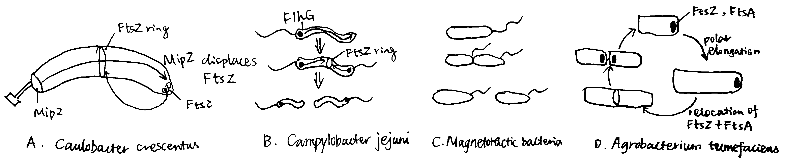
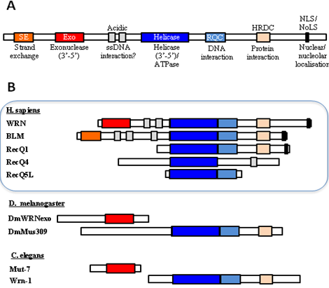
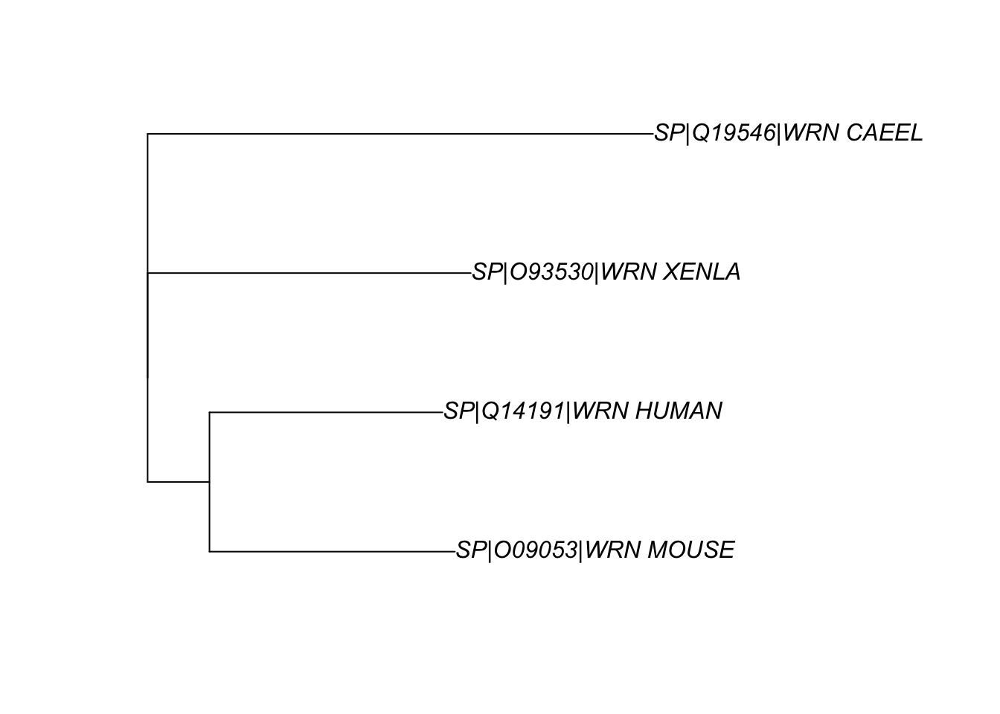
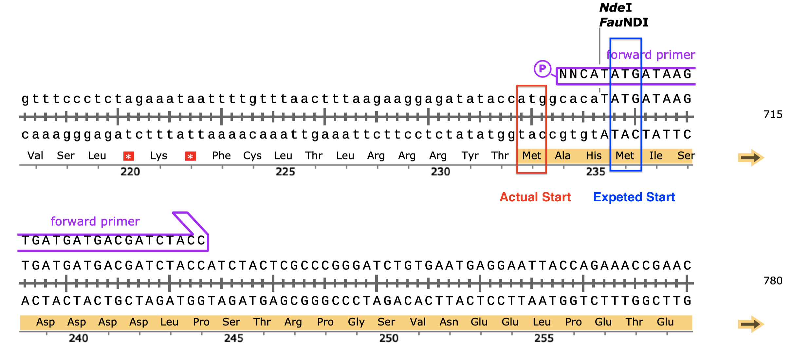
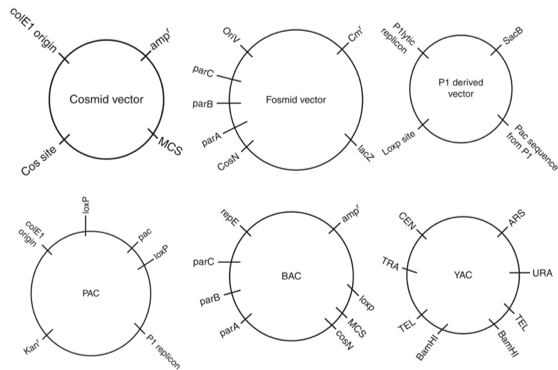
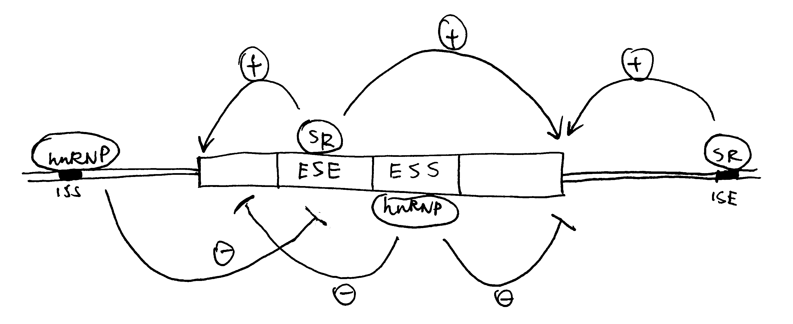

2020
- 1 Introduction
- 2 The Big Picture: Components of the C. elegans EGF-Ras-MAPK Pathway Involved in Vulva Induction
- 3 Techniques for Studying EGFR-Ras-MAPK Signalling and Vulva Induction
- 4 Conclusion
- References
1 Introduction
The Caenorhabditis elegans vulva is one of the best studied models of organogeneis. Genetic screening revealed three signalling pathways, EGFR-Ras-MAPK, Notch and Wnt1, that are critical to the fate determination of the 6 vulval precursor cells (VPCs), P(3-8)p.
VPCs adopt either 1\(^\circ\) or 2\(^\circ\) fate upon receiving appropriate signals, or 3\(^\circ\) fate if undinduced. The 8 descentdents of the 1\(^\circ\) VPC and the 14 descendents (7 each) of the 2\(^\circ\) VPCs give rise to the vulva, while 3\(^\circ\) VPCs produces epidermal cells which fuse with the syncytial epidermis hyp7.
In the L1 stage, a Wnt signal form the posterior body region selects the six Pn.p cells to become the VPCs and form the vulval competentce group. Then in the L2 stage, LIN-3 (EGF) signal from the anchor cell (AC) in the somatic gonad selects P6.p to be the single 1\(^\circ\) VPC1,2, and contact-dependent LIN-12 (Notch) signalling causes the flanking P5.p and P7.p to become 2\(^\circ\) VPCs. These precise signalling events always results in an invariant spatial pattern of VPCs in wild-type (WT) C. elegans, namely 3\(^\circ\)-3\(^\circ\)-2\(^\circ\)-1\(^\circ\)-2\(^\circ\)-3\(^\circ\).
This essay illustrates how the LET-60 (Ras) signalling has been studied in C. elegans vulval development, specifically the 1\(^\circ\) fate determination, according to these selected work and reviews: 3; 4; 5; 6; 7; 8. A recent review article by 9 and a book chapter by 10 are also taken into account (the latter was the most helpful).
2 The Big Picture: Components of the C. elegans EGF-Ras-MAPK Pathway Involved in Vulva Induction
Figure 2.1 gives an overview of the pathways by which EGF-Ras-MAPK signalling leads to the 1\(^\circ\) fate in P6.p and 2\(^\circ\) fate in flanking P5.p and P7.p cells.
![P6.p is the VPC closest to the AC, and it also expresses the highest levels of LET-23 on its basolateral membrane. Thus, P6.p receives most LIN-3 signalling and commits to the 1\(^\circ\) fate. Downstram of the LET-23 (EGFR) RTK, a canocical Ras-MAPK pathway transduces the signal into the nucleus. The scaffold proteins LIN-2 (CASK), LIN-7 (Veli), and LIN-10 (Mint-1) form a complex which helps to maintain basolateral localisation of LET-23. The SEM-5 (Grb2) adaptor protein11 uses its SH2 domain to anchor to LET-23 at phosphorylated tyrosines. The guanine exchange factor (GEF) SOS-112 then binds to SEM-5 (at SEM-5’s two SH3 domains), and it activates the membrane-anchored LET-60 (Ras)3. GTP-bound LET-60 then activates the LIN-45 (Raf)13, MEK-214 and MPK-1 (MAPK) kinase cascade, which is facilitated by the scaffold protein KSR. LIN-1 and forkhead LIN-31 transcription factors are the targets of MPK-115. In their unphosphorylated state, LIN-1 and LIN-31 forms a complex which represses 1\(^\circ\)-specific transcription of lin-39 and egl-1716. Phosphorylation makes the complex to dissociate, and phospho-LIN-31 is turned into an transcriptional activator. The 1\(^\circ\) P6.p also produces LAG-2 (Delta), which is the ligand for LIN-12 (Notch), thus transducing lateral signals to P5.p and P7.p. Notch signalling inhibits MAKP, and LET-60 in P5.p and P7.p cells uses a RAL-1 dependent pathway to commit to 2\(^\circ\) fate. A number of modifiers and negative regulators of the EGFR pathway has been identified, which include the tyrosine kinase Ark-117, the RTK phosphatase Dep-118. Adapted from 10 with reference to 19 and 20.](../img/c-ele-valva-big.jpg)
Figure 2.1: P6.p is the VPC closest to the AC, and it also expresses the highest levels of LET-23 on its basolateral membrane. Thus, P6.p receives most LIN-3 signalling and commits to the 1\(^\circ\) fate. Downstram of the LET-23 (EGFR) RTK, a canocical Ras-MAPK pathway transduces the signal into the nucleus. The scaffold proteins LIN-2 (CASK), LIN-7 (Veli), and LIN-10 (Mint-1) form a complex which helps to maintain basolateral localisation of LET-23. The SEM-5 (Grb2) adaptor protein11 uses its SH2 domain to anchor to LET-23 at phosphorylated tyrosines. The guanine exchange factor (GEF) SOS-112 then binds to SEM-5 (at SEM-5’s two SH3 domains), and it activates the membrane-anchored LET-60 (Ras)3. GTP-bound LET-60 then activates the LIN-45 (Raf)13, MEK-214 and MPK-1 (MAPK) kinase cascade, which is facilitated by the scaffold protein KSR. LIN-1 and forkhead LIN-31 transcription factors are the targets of MPK-115. In their unphosphorylated state, LIN-1 and LIN-31 forms a complex which represses 1\(^\circ\)-specific transcription of lin-39 and egl-1716. Phosphorylation makes the complex to dissociate, and phospho-LIN-31 is turned into an transcriptional activator. The 1\(^\circ\) P6.p also produces LAG-2 (Delta), which is the ligand for LIN-12 (Notch), thus transducing lateral signals to P5.p and P7.p. Notch signalling inhibits MAKP, and LET-60 in P5.p and P7.p cells uses a RAL-1 dependent pathway to commit to 2\(^\circ\) fate. A number of modifiers and negative regulators of the EGFR pathway has been identified, which include the tyrosine kinase Ark-117, the RTK phosphatase Dep-118. Adapted from 10 with reference to 19 and 20.
3 Techniques for Studying EGFR-Ras-MAPK Signalling and Vulva Induction
3.1 Forward Genetics and Reverse Genetics
3.1.1 In Early Experiments, Forward Genetics Methods were Used Entensively
Studies on the molecular mechanisms of C. elegans development date back to the 1980s, when genetic manipulating techniques, especially gene cloning, were emerging, but the complete genome sequencing (of C. elegans and other model organisms) had yet to start. Therefore, those pioineering studies relied heavily on forward genetics, where worms were subjected to mutagens, and abnomal phenotypes were identified, isolated, amplified (by self-fertilisation) and the respective genotypes were determined. Differential interference contrast (DIC)/Nomarski microscopes were commonly used to examine the phenotypes because of their superior imaging quuality for live and unstained samples. There were also cellular methods for manipulating gene expression (which especially aided in eludidating cell-cell interactions). First, observing fates of the cells among varying individuals. Second, using laser beams to ablate cells suspected to interact with the cell of interest. Third, isolation of cells of interest, or rearrangement of their surrounding cells.
These extensive genetic screens led to identification of a number of genes that cause abormal cell lineage (the lin# genes) phenotypes, notably vulvaless (Vul)/Egg-laying defective (Egl) or multivulva (Muv) (Figure 3.1). Epistasis analyses of these phenotypes grouped these genes into distinct pathways (notably EGFR-Ras-MAPK and Notch) and helped elucidating where each component functions in the respetive pathway. The general idea is that, if the phenotype of gene A masks the phenotype of gene B, then gene A is likely to act downstream of gene B.
![Egg-laying defective (Egl) and Multivulva (Muv) phenotypes caused by LET-23 EGFR-Ras-MAPK signalling mutants. (a): Wild type. Eggs are neatly arranged in the uterus. (b) and (c): Defective LIN-10 (which helps to localise LET-23) can lead to disorganisation of eggs (b) and the bag-of-worms phenotype (c), in which self-fertilised eggs hatch and larvae fills up their mother’s carcass. (d): let-60 gain-of-function results in Ras signalling in all VPCs, resulting in a Muv phenotype. Reproduced from 10.](../img/egl-muv-c-ele-vulva.png)
Figure 3.1: Egg-laying defective (Egl) and Multivulva (Muv) phenotypes caused by LET-23 EGFR-Ras-MAPK signalling mutants. (a): Wild type. Eggs are neatly arranged in the uterus. (b) and (c): Defective LIN-10 (which helps to localise LET-23) can lead to disorganisation of eggs (b) and the bag-of-worms phenotype (c), in which self-fertilised eggs hatch and larvae fills up their mother’s carcass. (d): let-60 gain-of-function results in Ras signalling in all VPCs, resulting in a Muv phenotype. Reproduced from 10.
Figure 3.2 shows the earliest expetiments that demonstrated the role of the AC and the LET-60 protein in vulval induction.
![(a) in wild-type cells, signals from the AC results in the invariant VPC pattern 3\(^\circ\)-3\(^\circ\)-2\(^\circ\)-1\(^\circ\)-2\(^\circ\)-3\(^\circ\); (b) ablation of the AC renders a Vul phenotype, where all 6 VPCs adopts the 3\(^\circ\) fate, this shows that the AC positively regulates vulval induction; (c) inactive LET-60 (Ras) also renders a Vul phenotype even in the presence of the AC, therefore LET-60 should be downstream of the signal from the AC; (d) LET-60 hyperactivity leads to a Muv phenotype, further demonstrating LET-60 as a positive regulator of vulval induction.](../img/vul-mul-simplest.jpg)
Figure 3.2: (a) in wild-type cells, signals from the AC results in the invariant VPC pattern 3\(^\circ\)-3\(^\circ\)-2\(^\circ\)-1\(^\circ\)-2\(^\circ\)-3\(^\circ\); (b) ablation of the AC renders a Vul phenotype, where all 6 VPCs adopts the 3\(^\circ\) fate, this shows that the AC positively regulates vulval induction; (c) inactive LET-60 (Ras) also renders a Vul phenotype even in the presence of the AC, therefore LET-60 should be downstream of the signal from the AC; (d) LET-60 hyperactivity leads to a Muv phenotype, further demonstrating LET-60 as a positive regulator of vulval induction.
3.1.2 RNAi and Reverse Genetics Since 1998
Early mutagenesis studies relied on chance to generate individuals with mutations for certain genes, which is laborious and not specific—usually some genes/DNA regions other than the genes of interest are also mutated, and studies on them can lead to confounding results.
Reverse genetics in C. elegans has become much more prevalent since 1998, when C. elegans became the first multicellular eukaryote to have its genome sequenced21, and it was shown that introdcution of dsRNA into worms results in inactivation of an endogenous gene with corresponding sequence22. This technique, known as RNA interference (RNAi), enables rapid, site-specific gene inactivation and has been rapidly embraced as a reverse-genetic tool and has dramatically accelerated the pace at which new gene functions are discovered.
3.2 Observing Cell Fates
3.2.1 Microscopic Analysis
Observing Val and Muv phenotypes is generally sufficient for ordering the components of the Ras pathway, but cell-cell interaction analyses require the ability to identify differentiated or undifferentiated individual VPCs. The boundaries between cells are not visible by DIC optics and thus cells are identified by the location, size, and morphology of the nucleus and nucleoli. Undifferentiated VPCs at the Pn.p stage each have a characteristic oblong nucleus with a round nucleolus.
3.2.2 Transcriptional Reporters
Several transcriptional targets of LET-23 (EGFR) signalling in P6.p, such as egl-17 and lag-2, have been identified and can be used as transcriptional reporters to identify vulval cell fates. By using a highly sentitive Ras-responsive reporter gene, egl-17::CFP, 8 showed that the Ras pathway is transiently activated in P5.p and P7.p, and that LIN-12 (Notch) activation in these two cells antagonises Ras signalling.
Single molecule fluorescence in situ hybridisation (smFISH) can also be used to monitor expression of cell fate determinants. It reveals subtle changes in gene expression and has been used, for example by 23, to visualise the dynamics of Ras-induced lag-2 expression, which demonstrates the cellular control of EGF-Ras induced gene expression by changing sensitivity to the EGF gradient .
3.3 Cross-Species Genomic Analysis Reveals Homology and Helps to Elucidate Roles of Proteins with Greater Accuracy
As sequencing techniques mature, complete genome sequences of more organisms are becoming available. This is accompanied by advance in computing power and bioinformatic algorithms, and they allow identification of a significant amount of homology among species.
The studies on C. elegans Ras signalling also benefitted from these developments. For example, MPK-1 was initially identified as a suppressor of Ras and was named SUR-1 before being identified as an Erk1/2 homologue. The scaffold protein KSR-1 was originally named SUR-3 due to the same reason. With homology available, one can easily guess the function of a novel gene/protein identified in one organism, if its sequence is found homologous with another gene with known functions.
3.4 Studying EGFR Localisation and Trafficking
The LET-23 EGFR upstream of LET-60 Ras has a polarised localisation in VPCs: vuval induction requires that EGFR to be expressed on the basolateral membrane. Immunostaining and live imaging can be used to monitor LET-23 trafficking and identify regulators involved.
3.4.1 Immunostaining
Immunostaining can be used to visualise subcellular localisation of components of regulators of the EDGR-Ras-MAPK pathway. This technique was used by 24 to establish the role of LIN-2/7/10 complex binding to LET-23 C-terminuc in regulating LET-23 basolateral localisation (Figure 3.3).

Figure 3.3: Top: LET-23 are localised to the basolateral membrane of VPCs in wild-type C. elegans; Middle: lin-7 mutant shows mislocalisation of LET-23 to the apical membrane; Bottom: let-23(sy1) mutant, in which a premature stop codon removes 6 C-terminal amino acids of LET-23, similarly resulted in mislocalisation of LET-23. LET-23 staining is shownin green, and staining for the cell junctions using the monoclonal antibody MH27 is shown in red. Reproduced from 24.
3.4.2 Live Imaging
Modern imaging techniques, notably confocal and epifluorescence microscopy, allow the subcellular localisation and trafficking of LET-23 to be observed in vivo, in real time. These studies often involve fusion proteins with fluorescence tags. For example, 25 used time-lapse imaging and fluorescence recovery after photobleaching to identify ERM-1 (the Ezrin homologue) as a temporal regulator of LET-23 localisation.
4 Conclusion
The understanding of the EGFR-Ras-MAPK signalling pathway is importnat because of its involvement in many human diseases, especially cancer. Vulva induction in C. elegans has been a valuable in vivo model for elucidating the identities and mechanisms of the components and regulators in this pathway. Studies on C. elegans traditionally relied on forward genetics, but new experimental techniques and bioinformatic are now solving previously unanswered questions in this field.
References
1. Hill, R. & Sternberg, P. The gene lin-3 encodes an inductive signal for vulval development in c. Elegans. Nature 358, 470–476 (1992).
2. Sternberg, P. W. & Horvitz, H. The combined action of two intercellular signaling pathways specifies three cell fates during vulval induction in c. Elegans. Cell 58, 679–693 (1989).
3. Beitel, G. J., Clark, S. G. & Horvitz, H. R. Caenorhabditis elegans ras gene let-60 acts as a switch in the pathway of vulval induction. Nature 348, 503–509 (1990).
4. Thomas, J. H., Stern, M. J. & Horvitz, H. R. Cell interactions coordinate the development of the c. Elegans egg-laying system. Cell 62, 1041–1052 (1990).
5. Sternberg, P. W. & Han, M. Genetics of ras signaling in c. Elegans. Trends Genet 14, 466–472 (1998).
6. Kornfeld, K. Vulval development in caenorhabditis elegans. Trends Genet 13, 55–61 (1997).
7. Sundaram, M. V. Vulval development: The battle between ras and notch. Current Biology 14, R311–R313 (2004).
8. Yoo, A., Bais, C. & Greenwald, I. Crosstalk between the egfr and lin-12/notch pathways in c. Elegans vulval development. Science 303, 663–666 (2004).
9. Schmid, T. & Hajnal, A. Signal transduction during c. Elegans vulval development: A neverending story. Current Opinion in Genetics & Development 32, 1–9 (2015).
10. Gauthier, K. & Rocheleau, C. E. C. Elegans vulva induction: An in vivo model to study epidermal growth factor receptor signaling and trafficking. in ErbB receptor signaling: Methods and protocols (ed. Wang, Z.) vol. 1652 43–61 (Humana Press, 2017).
11. Clark, S., Stern, M. & Horvritz, H. C. Elegans cell-signalling gene sem-5 encodes a protein with sh2 and sh3 domains. Nature 356, 340–344 (1992).
12. Chang, C., Hopper, N. & Sternberg, P. Caenorhabditis elegans sos-1 is necessary for multiple ras-mediated developmental signals. EMBO Journal 19, 3283–3294 (2000).
13. Han, M., Golden, A., Han, Y. & Sternberg, P. C. Elegans lin-45 raf gene participates in let-60 ras-stimulated vulval differentiation. Nature 363, 133–140 (1993).
14. Kornfeld, K., Guan, K. L. & Horvitz, H. R. The caenorhabditis elegans gene mek-2 is required for vulval induction and encodes a protein similar to the protein kinase mek. Genes Dev 9, 756–768 (1995).
15. Lackner, M. R., Kornfeld, K., Miller, L. M., Horvitz, H. R. & Kim, S. K. A map kinase homolog, mpk-1, is involved in ras-mediated induction of vulval cell fates in caenorhabditis elegans. Genes Dev 8, 160–173 (1994).
16. Leight, E. R., Glossip, D. & Kornfeld, K. Sumoylation of lin-1 promotes transcriptional repression and inhibition of vulval cell fates. Development 132, 1047–1056 (2005).
17. Hopper, N. A., Lee, J. & Sternberg, P. W. ARK-1 inhibits EGFR signaling in C. elegans. Molecular Cell 6, 65–75 (2000).
18. Berset, T. A., Hoier, E. F. & Hajnal, A. The c. Elegans homolog of the mammalian tumor suppressor dep-1/scc1 inhibits egfr signaling to regulate binary cell fate decisions. Genes Dev 19, 1328–1340 (2005).
19. Alberts, B. et al. Molecular biology of the cell. (Garland Science, 2014).
20. Sternberg, P. W. Vulval development. in WormBook (ed. Research Community, T. C. elegans) (WormBook, 2005). doi:doi/10.1895/wormbook.1.6.1.
21. Stein, L. D. Internet access to the c. Elegans genome. Trends in Genetics 15, 425–427 (1999).
22. Fire, A. et al. Potent and specific genetic interference by double-stranded rna in caenorhabditis elegans. Nature 391, 806–811 (1998).
23. Zon, J. S. van, Kienle, S., Huelsz-Prince, G., Barkoulas, M. & Oudenaarden, A. van. Cells change their sensitivity to an egf morphogen gradient to control egf-induced gene expression. Nature Communications 6, 7053 (2015).
24. Kaech, S. M., Whitfield, C. W. & Kim, S. K. The lin-2/lin-7/lin-10 complex mediates basolateral membrane localization of the c. Elegans egf receptor let-23 in vulval epithelial cells. Cell 94, 761–771 (1998).
25. Haag, P. A. B., Andrea AND Gutierrez. An in vivo egf receptor localization screen in c. Elegans identifies the ezrin homolog erm-1 as a temporal regulator of signaling. PLOS Genetics 10, 1–13 (2014).
26. Gilbert, S. F. & Barresi, M. J. F. Developmental biology. (Sinauer Associates, 2016).
27. Slack, J. M. W. Essential developmental biology. (WIley-Blackwell, 2018).
In this essay, the names of the actual C. elegans proteins and their (more commonly known) vertebrate/Drosophila homologues are used interchangeably. Here is a translation between them: (Drosophila: C. elegans) EGF: LIN-3; EGFR: LET-23; Grb2: SEM-5; Ras: LET-60; Raf: LIN-45; MEK: MEK-2; MAPK/Erk: MPK-1; Notch: LIN-12; Frizzled and Ryk (WNT-receptors): LIN-17 and LIN-18. C. elegans protein naming follows the WormBase convention↩
Title: What is the point of studying developmental biology?
The main theme of developmental biology is the fate determination of cells, their division, differention and death, as well as the resulting higher level processes, including morphogenesis and organ formation. I’ll illustrate how this knowledge can help with preventive and public healthcare as well as modern medical research.
Prenatal Care (Preventing Teratogenesis)
Teratogen and congenital anomaly
According to the US’ National Research Council, ~3% of live births suffer from major developmental aberrations, ~70% of neonatal deaths are due to developmental defects.
- exogenous agents that cause birth defects are teratogens, they can be chemicals, radiations, or viral infections, and so on
- thalidomide
- used to treat anxiety
- malformed arms and legs
- thee first major evidence that drugs could induce congenital anomalies
- led to the development of greater drug regulation and monitoring in many countries
- alcohol interferes with fetal neural development and is shown to cause mental retardation in the newborn
- fetal alcohol syndrome
- abnormal facial development
- most prevalent type of congenital mental retardation syndrome in the US
- in pregnant women, Zika virus directly infects the neural progenitor cells of the fetal cortex (vertically transmitted infection), resulting in the death of these cells
- Model organisms such as Xenopus and Denio, are often used to screen compound that have a high probability of being hazardous, because the early development of these organisms rely on the same basic paracrine factors and TFs as humans do.
- studies on model organisms have revealed three probable pathways for alcohol teratogenesis. first, generation of superoxide redicals; second, downregulation of Sonic hedgehog; third, intereference of the cell adhesion molecule L1
Nutrients
to sustain normal development of the fetus, healthy diet is needed. This is quite obvious, however, there is one vitamin, that cannot be obtained with enough amount just from food, it is folic acid
- Folic acid
- it is found to significantly reduce the chance of neural tube defects in infants, but only at high doses
- it’s recommended, by NHS, that all pregnant women should take a daily supplement of 400 migrograms of folic acid before they’re pregnant and during the first 12 weeeks of pregnancy, when the baby’s spine is developing
Stem Cell
an important subdomain of developmental biology is stem cell biology, which has many applications in research and medicine. here I’ll focus on pluripotent stem cells
ES Cells
- ES cells are the natural source of pluripotent cells
- ICM (embryoblast) and trophoblast
- the study of the normal sequence of embryonic inductions yielded the methods for induced differentiation of these cells
- derived from the inner cell mass of blastocysts from IVF clinic
- harvesting human ES cells means destroying human embryos (5 days after fertilisation)
- raised ethical controversy
iPS cells
- Reverting to undifferentated state
- functionallty equivalent to embryonic stem cells
- capable of differentiating into almost all cell types
- Shinya Yamanaka factors: Oct4, Klf4, Sox2, c-Myc
- screened 22 factors
- Regenerative Medicine
- SMA clinical trial in Japan
- Organoids
- An organoid is a miniaturized and simplified version of an organ produced in vitro in three dimensions that shows realistic micro-anatomy
Cancer as a Disease of Development
- carcinogenesis can be viewed as a disease of development because it involes aberrations of the processes that underlie cell division, differentiation and morphogenesis
- once it was thought that carcinogenesis and metastasis were caused by cells that had acquired mutations enabling them to proliferate independent of the enviornment.
- but it turns out that this is not the complete explanation
- cancer cells can actuallt modify their environment, turning it into a cancer-promoting niche
- this means the progression of many cancers depends on reciprocal interactions between hte cancer cells and the supporting cells of their tissue environment
Indeed, carcinogenesis appears to recapitulate steps of normal development, including the formation of a niche in which to proliferate, using the same or closely related signalling pathways
- Defects in cell-cell conmmunication
- studies have shown that tumours can be cuased by altering hte structure of the surrounding tissue, and that these tumors can be suppressed by restoring an appropriate tissue envionment
- althogh 80% human tumors are from epithelial cells, the cells that carcinogens act on are often not the epithelial cells themselves, but the mesenchymal stromal cells that surround and sustain the epithelia
- there was a study in which normal and carcinogen-treated epithelia and mesenchyme in rat mammary glands are recombined, and it turns out that, tumor growth occurred not in carcinogen-treated epithelia, but in epithelia placed in combination with carcinogen-treated mesenchyme
- in this case, the mesenchyme fails to give instructions to the epithelia to form normals structures, and epithelial cells exhibited a loose control of cell proliferation
- Defects in paracrine pathways
- Several key signaling pathways involved in embryogenesis, such as Hedgehog, Notch and Wnt, also have crucial roles in carcinogenesis when improperly activated in adults through sporadic mutatiions or other mechanisms
- many tumors, secrete the paracrine signalling factor Shh, which can act in two ways
- the same chemicals that can cause teratogenesis by blocking a pathway in embryonic development may be useful in blocking the activation of cancer cells (cancer stem cells, as I will describe next)
- Cyclopamine and other antagonists of the Shh pathway, for instance, appear to be useful in preventing hte generation and proliferation of meedulloblastoma stem cells
- Cancer stem cells
- an aspect of viewing cancers as diseases of development is that the properties of tumors may emerge because of a population of cells that are analogous to adult stem cells
- this is shown in studies on rat intestinal adenomas
- the lumen of the mice intestine is made up of villi and crypts
- at the bottom of the crypts there reside two important cells, Lrg5+ cells and Paneth cells, Lgr5+ is the stem cell and Paneth cell is the
- lineage tracing revealed that
- the stem cells of rat intestinal adenomas also expresses Lgr5 and has the same interact with P cell as normal stem cells do
References
Gilbert, Scott F., and Michael J. F. Barresi. 2016. Developmental Biology. 11th ed. Sinauer Associates.
Slack, Jonathan M. W. 2018. Essential Developmental Biology. 3rd Ser. WIley-Blackwell.
Song, Wen AND Wei, Zhou AND Yue. 2011. “Sonic Hedgehog Pathway Is Essential for Maintenance of Cancer Stem-Like Cells in Human Gastric Cancer.” PLOS ONE 6 (3). Public Library of Science: 1–13. https://doi.org/10.1371/journal.pone.0017687.
Takeo, Makoto, and Takashi Tsuji. 2018. “Organ Regeneration Based on Developmental Biology: Past and Future.” Current Opinion in Genetics & Development 52: 42–47. https://doi.org/https://doi.org/10.1016/j.gde.2018.05.008.
discussing both Gram positive and negative bacteria with different morphologies, how they divide and chose examples of antibiotics, comparing their different effects


1 Introduction
The modes of bacterial cell division vary, but the most common one is binary fission (Stahl 2019), and its mechanism, especially in rod-shaped model organisms Escherichia coli and Bacillus subtilis, has been studied extensively. Despite the characterisation of most proteins required for divisome, their coordination at the molecular detail remain largely unclear (Tsang and Bernhardt 2015). The question of how bacteria divide is further complicated by variations in proteins involved, and even in the physical nature, among different bacterial species (Eswara and Ramamurthi 2017)
This essay introduces FtsZ as a highly conserved protein involved in septum formation and its regulation in model organsisms, and gives examples on diviations from these rules that mainly comes from studies on nonmodel organisms.
2 Preparation for Cell Division
The chromosome must be replicated once and only once prior to cell devision, and it must be ensured that each daughter cell receives one copy of the chromosome.
2.1 Chromosome Replication
Chromosome replication is principally regulated by DnaA in E. coli. DnaA initiates replication by binding its active, GTP-bound form (DnaA-ATP) to OriC. Its inactivation upon initiation of replication ensures one round of replication per cell cycle1. Such mechanisms include competition for OriC binding by SeqA, repression of dnaA expression (also by SeqA), and inactivation of DnaA-ATP by the ATPase HdaA.
2.2 Chromosome Segregation
Segregation of chromosomes and plasmids is achieved while they are being replicated by using the Par system in some bacteria such as the budding bacteria Caulobacter crescentus, as illustrated in Figure 2.1. popZ proteins anchors the chromosome at its parS sequence (near oriC) to the old pole, which is mediated by parB. As replication starts, more parB binds to parS sequence of the newly synthesised chromosome, and is pulled to the new cell pole by the ATPase activity of ParA.
Figure 2.1: The Par system segregates replicated chromosomes in Caulobacter crescentus.
The mechanism of chromosome segregation in E. coli, which lacks Par, is not well characterised.
3 FtsZ and the Z-ring
Central to almost all bactrial division is the FtsZ protein. FtsZ is a homolog of tubulin found in most bacteria and some archaea. Like tubulin, FtsZ is a GTPase and can polymerise into filaments. During cell division, FtsZ filaments assemble into a ring (Z-ring) at the site where the septum forms. The FtsZ ring then recruits other proteins of the divisome, allowing division to proceed. The Z-ring contracts as the bacterium divides, forming an invagination which finally divides the bacterium in two.
The GTPase activity accounts for the rapid turnover dynamics of the FtsZ filaments that form the Z-ring. It has also been proposed that FtsZ’s GTPase activity energises the constriction of the ring and the invagination of the cell membrane and the cell wall, but this notion is challenged by the observation of mutants that are severely impoaired in GTP hydrolysis still capable of dividing, and mathematical modelling that shows force generation could be achieved independenly of GTPase activity, but instead with hydrolysis (Adams and Errington 2009).
3.1 Z-ring Placement
The site of cell division in rod-shaped bacteria is usually at the centre of the cell, which is dependent on the corrent placement of the Z-ring. As shown in Figure 3.1, this is typically achieved using two mechanisms, nucleoid occlusion (NO), and the Min system, which are well characterised in E. coli and B. subtilis. It should be noted, however, that there is increasing evidence showing Z-ring positioning may be determined by other factors, and Min and NO systems may primarily function to ensure the efficient utilisation of this site. Such evidence include the observation of precise midcell Z-ring formation in Min- and Noc-null B. subtilis by Rodrigues and Harry (2012).
3.1.1 The Min system
The MinC, MinD and MinE proteins interact to prevent Z-ring formation at the poles (Ghosal et al. 2014; Ramm, Heermann, and Schwille 2019). MinC is the effector of the system owing to its inhibitory effect on FtsZ ring assembly. MinD is an ATPase which recruit MinC to the membrane. MinCD complex together inhibit Z-ring formation. MinE is an ATPase-activating protein which has an anti-MinCD domain and a topological specificity domain (which confines its anti-MinCD activity only at midcell). The three proteins MinCDE form an oscillation cycle from pole to pole (driven by MinDE), causing the time-averaged concentration of MinCD complexes to be lowest at the midcell, which favours Z-ring formation there. B. subtilis also has a Min system but it is not involved in the placement of the Z-ring.
3.1.2 Nuclear Occlusion
Nuclear occlusion prevents Z-ring formation atop of nucleoids. It is mediated by SlmA in E. coli and Noc in B subtilis. Neither are normally essential in their respective organisms, but both are synthetically lethal with mutatations of Min, due to chaotic FtsZ assembly.
According to Adams, Wu, and Errington (2015), Noc has a sequence-specific DNA-binding domain and a membrane-associating domain. Noc is thought to oligomerise using their two dimerisation domains, bind to DNA at specific sequences, and then insert into the inner leaflet of the cytoplasmic membrane.
Figure 3.1: Negative regulation by nuclear occulation and the Min system ensures formation of the FtsZ ring in E coli.
3.2 Other Key Proteins in the Divisome
A fully functional divisome requires a combination of proteins in addition to the FtsZ ring. Most of these proteins have close association with the Z ring. In E. coli, It was thought that the recruitment of these proteins appears to have a linear dependecy pathway which starts with FtsA/ZipA and ends with FtsN, but a recent review by Du and Lutkenhaus (2017) shows evidence for the noon-sequential assembly of the divisome.
3.2.1 ZipA and FtsA
ZipA is acts to tether the FtsZ ring to the cytoplasmic membrane. It is not widely conserved outside of Gammaproteobacteria, and, in E. coli, its necessity in cell division is bypassed by a gain-of-function mutation in FtsA. FtsA, which is more widely conserved in bacteria, also anchors the Z ring to the membrane and coordinates its initial assembly (Adams and Errington 2009).
FtsA is related to actin, and, like actin, it binds ATP and is found to reversibly polymerise into corkscrew-like helices in Streptococcus pneumoniae. Its ATPase activity is reported in B. subtilis but not in S. pneumoniae. Mutagenesis studies suggest that nucleotide binding may be required for FtsA’s ability to interact with itself and with FtsZ, (Pichoff and Lutkenhaus 2007) but its exact role is unknown.
FtsA differs from actin in that it is missing the 1B domain and it has an unrelated subdomain called 1C. The 1C domain is involved in recruiting downstream components of the divisome to the Z ring.
3.2.2 Downstream Proteins Recruited by the FtsZ Ring
Upon assembly of the FtsZ ring, other downstream proteins, notably those involved in peptidoglycan biosynthesis, are recruited to form the divisome.
FtsI, also known as penicillin binding protein 3 (PBP3), is one such protein in E. coli. It is required specifically for peptidoglycan synthesis at the septum (Chen and Beckwith 2001). Its recruitment is dependent on FtsK, which appears to be a bifunctional protein, with the C-terminal domain facilitating segregation of chromosome and the N-terminal domain carrying out a necessary, but undefined, function in septum development.
A summary of the divisome components is shown in Figure 3.2
Figure 3.2: Components of the divisome.
3.2.3 FtsN
In E. coli, FtsN is the last component of recruited to the divisome. Once it arrives at the Z ring, the divisome begin to actively synthesising septal peptidoglycan to divide the cell. It has been suggest that FtsA-FtsN interaction may trigger cell constriction in a positive feedback loop (Tsang and Bernhardt 2015), but the exact mechanism remain elusive.
4 Alternative Strategies for Bacterial Cell Division
4.1 Alternative strategies of Binary Division
Binary division means dividing a bacterial cell into daughter cells with equal volume and physiology, which requires the FtsZ ring to form at the midcell. Apart form the NO and Min systems described above, there are other strategies to achieve this.

Figure 4.1: Alternative strategies of Binary Division
4.1.1 Caulobacter crescentus
The budding bacteria C. crescentus uses the MipZ gradient to regulate FtsZ ring placement (Figure 4.1 A). MipZ is translocated from the old pole to the new pole during chromosome replication and segregation, by directly interacting with the ParB-parS complex (see section 2.2). MipZ displaces FtsZ from polar regions, thus permitting ring formation only at midcell.
4.1.2 Campylobacter jejuni and Magnetotactic Bacterium
The amphitrichous2 bacteria Campylobacter jejuni uses the ATPase FlhG, which is a MinD/ParA homologue and a known regulator of flagellar number, to locate the Z ring placement, by expelling FtsZ from the two longitudinal poles where flagella grow.
By constrast, in the monotrichohus magnetotactic bacterium of the Gammaproteobacteria class, flagellum formation in the daughter cell is dictated by the septum (Figure 4.1 B and C).
4.1.3 Agrobacterium Tumefaciens
Most bacteria that exhibit binary division elongate their cells from the middle or at several locations perpenticular to the long axis (e.g. in E. coli, which is mediated by MreB). However, Agrobacterium Tumefaciens, which elongates unidirectionally, can still achhive binary division. As shown in Figure 4.1 D, after division, FtsA and FtsZ stay at the newly formed growth pole and facilitate polar growth. Upon elongation, they relocate to the midcell to initiate division.
4.2 Positive Regulation in Myxococcus xanthus
The NO and Min systems described above are both negative regulatory mechanisms, where regions of low activity of relevant proteins allows for foramtion of FtsZ ring. There is evidence in some nonmodel organisms of positive regulation, where FtsZ ring formation is promoted by presence of certain proteins. This is exemplified by the deltaproteobacterium M. xanthus, in which the ParA-like protein PomZ localises to midcell in an FtsZ-independent manner before FtsZ ring formation.
4.3 Cell Division without FtsZ
In some species of Mycoplasma (which are well known for their small genomes), the FtsZ homologue is absent (Lluch-Senar, Querol, and Piñol 2010). Although the cell division mechanisms in these organisms remain elusive, they lead to reassessments on the role of FtsZ in FtsZ-dependent cell division. For example, as reviewed by Xiao and Goley (2016), it is likely that the main driving force for membrane invagination and constriction is not directly provided by FtsZ, but by the peptidoglycan synthesis.
5 Concluding Remarks
There is an extensive repertoire of cell division strategies based on distinct families of proteins in the domain of bacteria. The lack of universal conservation and the ease of horizontal gene transfer among bacteria make cell division a suboptimal target of antibiotics. Indeed, most available antibiotics related to bacterial cell division target cell wall synthesis, and there is little progress made on developing drugs that interferes with other components of bacterial divisome.
References
Adams, David W., and Jeff Errington. 2009. “Bacterial Cell Division: Assembly, Maintenance and Disassembly of the Z Ring.” Nature Reviews Microbiology 7 (9): 642–53. https://doi.org/10.1038/nrmicro2198.
Adams, David William, Ling Juan Wu, and Jeff Errington. 2015. “Nucleoid Occlusion Protein Noc Recruits Dna to the Bacterial Cell Membrane.” EMBO J 34 (4): 491–501. https://doi.org/10.15252/embj.201490177.
Alberts, Bruce, Alexander Johnson, Julian Lewis, David Morgan, Martin Raff, Keith Roberts, and Peter Walter. 2014. Molecular Biology of the Cell. Book. 6th ed. Garland Science.
Chen, Joseph C., and Jon Beckwith. 2001. “FtsQ, Ftsl and Ftsi Require Ftsk, but Not Ftsn, for Co-Localization with Ftsz During Escherichia Coli Cell Division.” Molecular Microbiology 42 (2): 395–413. https://doi.org/10.1046/j.1365-2958.2001.02640.x.
Du, Shishen, and Joe Lutkenhaus. 2017. “Assembly and Activation of the Escherichia Coli Divisome.” Molecular Microbiology 105 (2): 177–87. https://doi.org/10.1111/mmi.13696.
Eswara, Prahathees J., and Kumaran S. Ramamurthi. 2017. “Bacterial Cell Division: Nonmodels Poised to Take the Spotlight.” Annual Review of Microbiology 71 (1): 393–411. https://doi.org/10.1146/annurev-micro-102215-095657.
Ghosal, Debnath, Daniel Trambaiolo, Linda A. Amos, and Jan Löwe. 2014. “MinCD Cell Division Proteins Form Alternating Copolymeric Cytomotive Filaments.” Nature Communications 5 (1): 5341. https://doi.org/10.1038/ncomms6341.
Lluch-Senar, Maria, Enrique Querol, and Jaume Piñol. 2010. “Cell Division in a Minimal Bacterium in the Absence of ftsZ.” Molecular Microbiology 78 (2): 278–89. https://doi.org/10.1111/j.1365-2958.2010.07306.x.
Pichoff, Sebastien, and Joe Lutkenhaus. 2007. “Identification of a Region of Ftsa Required for Interaction with Ftsz.” Molecular Microbiology 64 (4): 1129–38. https://doi.org/10.1111/j.1365-2958.2007.05735.x.
Ramm, Beatrice, Tamara Heermann, and Petra Schwille. 2019. “The E. Coli Mincde System in the Regulation of Protein Patterns and Gradients.” Cellular and Molecular Life Sciences 76 (21): 4245–73. https://doi.org/10.1007/s00018-019-03218-x.
Rodrigues, Christopher D. A., and Elizabeth J. Harry. 2012. “The Min System and Nucleoid Occlusion Are Not Required for Identifying the Division Site in Bacillus Subtilis but Ensure Its Efficient Utilization.” PLOS Genetics 8 (3). Public Library of Science: 1–20. https://doi.org/10.1371/journal.pgen.1002561.
Stahl, Michael T Madigan; Kelly S Bender; Daniel Hezekiah Buckley; W Matthew Sattley; David Allan. 2019. “Molecular Biology of Microbial Growth.” In Brock Biology of Microorganisms, Fifteenth edition, Global edition. Pearson.
Tsang, Mary-Jane, and Thomas G Bernhardt. 2015. “Guiding Divisome Assembly and Controlling Its Activity.” Current Opinion in Microbiology 24: 60–65. https://doi.org/https://doi.org/10.1016/j.mib.2015.01.002.
Xiao, Jie, and Erin D Goley. 2016. “Redefining the Roles of the Ftsz-Ring in Bacterial Cytokinesis.” Current Opinion in Microbiology 34: 90–96. https://doi.org/https://doi.org/10.1016/j.mib.2016.08.008.
About the frame
Sometimes we want to use the start/stop codon in the vector for our protein production, especially when tag sequences need to be included. In these cases, we need to check our inserted GOI is in frame with the start/codon on the vector. Frame mismatch can be corrected by adding 1 or 2 random nucleotide(s) to the primer (forward primer to match vector start condon and reverse primer to match the stop codon) between the GOI sequence and the restriction site sequence.
Some vectors have an N-terminal tag and stop codons in all three frames (e.g. TGA C TGA C TGA)
For the second tutorial, I want you to try some proper molecular biology using online tools, just as we do every day in the lab. Try it out on your own first, though you may wish to discuss any issues you may be having with each other. Please bring files/printouts and if you have one, your laptop to the tutorial. You will find NCBI BLAST useful and various links within www.expasy.org (e.g. In proteomics section, Clustal, T-coffee, Translate, prot param etc). You may also like to download ApE or Snapgene viewer from the web but make sure you scan with e.g. Sophos before you open them. You can do full in silico cloning in ApE (but only in the expensive paid-for version of Snapgene) but Snapgene (even free viewer) offers much better visualization so you may want to use both but for different features. For structural productions, Swissprot is convenient, then for mutagenesis, move to Pymol or equivalent.
Mystery gene (lower case = non-coding, upper case = coding)
GTATTTTGCGTCCATTTCGATCAAAAGACTATTTCTCATTTCCTCCCACGATTTTAGATAATAATATTATCTTATGTCATGCACAGATGATAAGTGATGATGACGATCTACCATCTACTCGCCCGGGATCTGTGAATGAGGAATTACCAGAAACCGAACCCGAAGATAATGATGAGTTGCCTGAAACAGAACCTGAAAGCGATTCCGATAAACCTACCGTAACCTCGAATAAAACAGAAAACCAAGTTGCTGATGAAGATTATGATTCATTCGACGATTTTGTGCCCAGTCAAACACACACAGCCTCCAAAATACCTGTAAAAAATAAACGAGCCAAAAAGTGCACTGTAGAATCTGATTCATCATCTTCGGATGATTCCGATCAAGGAGATGATTGTGAATTTATCCCAGCTTGTGATGAGACACAGGAAGTTCCGAAAATCAAAAGAGGATACACTCTGAGAACTCGAGCAAGTGTAAAGAACAAATGTGATGATTCATGGGATGATGGAATAGACGAAGAAGATGTCTCAAAAAGATCAGAAGACACGTTAAATGATTCATTTGTTGATCCTGAATTCATGGATTCTGTTCTAGATAATCAATTAACGATCAAAGGCAAAAAGCAATTTCTCGATGATGGAGAGTTTTTCACAGACCGGAATGTTCCTCAGATTGATGAAGCTACAAAAATGAAGTGGGCATCAATGACGTCACCTCCTCAAGAAGCTTTGAACGCATTGAACGAATTCTTCGGTCATAAAGGATTCCGAGAAAAGCAGTGGGATGTTGTCAGAAATGTTTTGGGAGGAAAAGACCAATTTGTTCTTATGTCCACTGGTTATGGTAAAAGTGTATGTTATCAGCTACCATCACTTCTTCTCAATTCGATGACTGTCGTGGTATCTCCATTAATTTCATTGATGAATGATCAAGTAACTACATTGGTTTCTAAAGGTATTGATGCAGTGAAACTAGATGGACATTCTACACAAATTGAATGGGATCAAGTTGCGAATAATATGCACCGAATTAGGTTCATCTACATGTCACCTGAAATGGTTACGAGCCAAAAGGGTTTGGAATTATTAACTTCTTGCCGAAAACATATCTCCCTCCTCGCTATTGATGAAGCTCATTGTGTTTCTCAATGGGGACACGACTTTCGAAACTCGTACAGGCATCTCGCAGAAATTAGAAACCGATCTGATCTATGCAATATTCCAATGATTGCTCTTACCGCTACTGCCACAGTTAGAGTTCGTGATGACGTCATTGCTAATTTAAGACTCCGCAAGCCATTAATCACAACTACGTCGTTTGATAGAAAGAATCTCTACATTTCTGTGCATTCTTCAAAGGACATGGCTGAAGATTTAGGATTATTCATGAAAACCGATGAAGTTAAAGGAAGACACTTTGGTGGACCTACTATTATTTATTGCCAAACGAAACAAATGGTCGATGATGTGAACTGTGTTTTGAGAAGAATCGGAGTTCGTTCTGCTCATTATCACGCAGGACTCACTAAAAATCAACGAGAAAAAGCACACACCGATTTTATGAGAGATAAGATTACAACAATCGTTGCGACAGTTGCATTTGGTATGGGAATTGACAAACCCGACGTTCGAAATGTGATTCATTACGGATGCCCGAACAATATCGAATCATATTATCAAGAAATCGGAAGAGCTGGTCGAGATGGATCTCCAAGTATTTGTCGTGTATTCTGGGCTCCGAAAGATTTGAATACTATAAAATTTAAACTTCGAAATTCGCAGCAAAAAGAAGAAGTAGTTGAAAATCTTACAATGATGCTAAGACAACTCGAGTTGGTTCTGACAACCGTTGGATGTAGAAGATACCAACTTCTGAAGCACTTTGACCCATCATACGCGAAACCTCCAACTATGCAAGCTGATTGTTGTGATAGATGTACTGAAATGCTCAATGGAAATCAAGATTCATCATCCAGTATTGTTGATGTTACAACAGAATCGAAGTGGTTGTTTCAAGTTATTAACGAAATGTACAACGGGAAAACTGGTATCGGAAAACCAATCGAATTTCTGAGGGGATCGAGTAAAGAAGACTGGCGAATCAAGACCACATCTCAACAAAAATTGTTTGGAATTGGAAAACATATTCCTGATAAATGGTGGAAAGCACTTGCAGCATCACTTCGAATTGCTGGTTATCTTGGAGAAGTTAGGCTGATGCAAATGAAATTTGGAAGTTGTATCACTTTGTCCGAACTCGGGGAACGATGGCTTTTGACTGGAAAAGAGATGAAAATCGATGCGACACCGATTTTATTGCAAGGGAAGAAAGAAAAAGCCGCACCTTCAACTGTCCCCGGAGCTTCAAGATCTCAGTCAACTAAATCAAGTACAGAGATTCCAACCAAGATTCTCGGAGCGAATAAGATTCGTGAATACGAGCCTGCAAATGAAAACGAGCAGCTGATGAACTTGAAAAAGCAAGAAGTCACTGGTCTTCCAGAGAAGATTGATCAACTGCGCTCTCGTCTTGACGACATTCGTGTAGGAATTGCAAACATGCATGAAGTAGCACCATTCCAAATTGTATCGAATACTGTTCTTGATTGTTTTGCCAACTTGAGACCTACCTCAGCCTCGAATCTCGAAATGATTGATGGAATGTCGGCTCAGCAGAAATCTAGATACGGAAAACGATTTGTCGATTGTGTTGTACAATTTTCAAAGGAAACTGGCATTGCAACAAACGTCAATGCCAACGATATGATACCCCCTGAACTTATTTCAAAAATGCAGAAAGTTCTCTCGGATGCGGTGAGAAGAGTATACACAGAGCATCTTATTTCGAGATCCACTGCGAAAGAAGTGGCAACTGCTCGAGGAATTAGTGAGGGTACTGTATATTCATATCTCGCGATGGCGGTAGAAAAAGGATTACCTCTTCACTTAGACAAGTTAAATGTCTCCAGAAAGAATATTGCAATGGCTCTAAATGCAGTTAGAGTACATTTAGGATCAAATGTTGCCGTACTGACACCATGGGTTGAAGCTATGGGAGTCGTACCTGATTTTAATCAGTTGAAATTGATCCGGGCAATTCTTATTTACGAATATGGATTGGATACGAGTGAGAACCAAGAGAAGCCAGACATCCAATCTATGCCGTCCACTTCAAATCCATCCACCATCAAAACAGTTCCATCAACACCTTCATCCTCTCTCAGAGCTCCTCCATTGAAGAAATTCAAACTTTAAATTTCTTATATTTTTTTTAATCTGAATATCATAACTATACGGTCTCTTATTTTCAATCTCATCCCTGTCTATATGAATGCTGGTTATTCGATTTTCACTTATGAATTTTTAAAAACACTTpIVEX2.3d Vector Sequence
TCGCGCGTTTCGGTGATGACGGTGAAAACCTCTGACACATGCAGCTCCCGGAGACGGTCACAGCTTGTCTGTAAGCGGATGCCGGGAGCAGACAAGCCCGTCAGGGCGCGTCAGCGGGTGTTGGCGGGTGTCGGGGCTGGCTTAACTATGCGGCATCAGAGCAGATTGTACTGAGAGTGCACCATATATGCGGTGTGAAATACCGCACAGATGCGTAAGGAGAAAATACCGCATCAGGCGCCATTCGCCATTCAGGCTGCGCAACTGTTGGGAAGGGCGATCGGTGCGGGCCTCTTCGCTATTACGCCAGCTGGCGAAAGGGGGATGTGCTGCAAGGCGATTAAGTTGGGTAACGCCAGGGTTTTCCCAGTCACGACGTTGTAAAACGACGGCCAGTGCCAAGCTTGCATGCAAGGAGATGGCGCCCAACAGTCCCCCGGCCACGGGGCCTGCCACCATACCCACGCCGAAACAAGCGCTCATGAGCCCGAAGTGGCGAGCCCGATCTTCCCCATCGGTGATGTCGGCGATATAGGCGCCAGCAACCGCACCTGTGGCGCCGGTGATGCCGGCCACGATGCGTCCGGCGTAGAGGATCGAGATCTCGATCCCGCGAAATTAATACGACTCACTATAGGGAGACCACAACGGTTTCCCTCTAGAAATAATTTTGTTTAACTTTAAGAAGGAGATATACCATGGCACATATGAGCGGCCGCGTCGACTCGAGCGAGCTCCCGGGGGGGGTTCTCATCATCATCATCATCATTAATAAAAGGGCGAATTCCAGCACACTGGCGGCCGTTACTAGTGGATCCGGCTGCTAACAAAGCCCGAAAGGAAGCTGAGTTGGCTGCTGCCACCGCTGAGCAATAACTAGCATAACCCCTTGGGGCCTCTAAACGGGTCTTGAGGGGTTTTTTGCTGAAAGGAGGAACTATATCCGGATATCCACAGGACGGGTGTGGTCGCCATGATCGCGTAGTCGATAGTGGCTCCAAGTAGCGAAGCGAGCAGGACTGGGCGGCGGCCAAAGCGGTCGGACAGTGCTCCGAGAACGGGTGCGCATAGAAATTGCATCAACGCATATAGCGCTAGCAGCACGCCATAGTGACTGGCGATGCTGTCGGAATGGACGATATCCCGCAAGAGGCCCGGCAGTACCGGCATAACCAAGCCTATGCCTACAGCATCCAGGGTGACGGTGCCGAGGATGACGATGAGCGCATTGTTAGATTTCATACACGGTGCCTGACTGCGTTAGCAATTTAACTGTGATAAACTACCGCATTAAAGCTTATCGATGATAAGCTGTCAAACATGAGAATTCGTAATCATGTCATAGCTGTTTCCTGTGTGAAATTGTTATCCGCTCACAATTCCACACAACATACGAGCCGGAAGCATAAAGTGTAAAGCCTGGGGTGCCTAATGAGTGAGCTAACTCACATTAATTGCGTTGCGCTCACTGCCCGCTTTCCAGTCGGGAAACCTGTCGTGCCAGCTGCATTAATGAATCGGCCAACGCGCGGGGAGAGGCGGTTTGCGTATTGGGCGCTCTTCCGCTTCCTCGCTCACTGACTCGCTGCGCTCGGTCGTTCGGCTGCGGCGAGCGGTATCAGCTCACTCAAAGGCGGTAATACGGTTATCCACAGAATCAGGGGATAACGCAGGAAAGAACATGTGAGCAAAAGGCCAGCAAAAGGCCAGGAACCGTAAAAAGGCCGCGTTGCTGGCGTTTTTCCATAGGCTCCGCCCCCCTGACGAGCATCACAAAAATCGACGCTCAAGTCAGAGGTGGCGAAACCCGACAGGACTATAAAGATACCAGGCGTTTCCCCCTGGAAGCTCCCTCGTGCGCTCTCCTGTTCCGACCCTGCCGCTTACCGGATACCTGTCCGCCTTTCTCCCTTCGGGAAGCGTGGCGCTTTCTCATAGCTCACGCTGTAGGTATCTCAGTTCGGTGTAGGTCGTTCGCTCCAAGCTGGGCTGTGTGCACGAACCCCCCGTTCAGCCCGACCGCTGCGCCTTATCCGGTAACTATCGTCTTGAGTCCAACCCGGTAAGACACGACTTATCGCCACTGGCAGCAGCCACTGGTAACAGGATTAGCAGAGCGAGGTATGTAGGCGGTGCTACAGAGTTCTTGAAGTGGTGGCCTAACTACGGCTACACTAGAAGGACAGTATTTGGTATCTGCGCTCTGCTGAAGCCAGTTACCTTCGGAAAAAGAGTTGGTAGCTCTTGATCCGGCAAACAAACCACCGCTGGTAGCGGTGGTTTTTTTGTTTGCAAGCAGCAGATTACGCGCAGAAAAAAAGGATCTCAAGAAGATCCTTTGATCTTTTCTACGGGGTCTGACGCTCAGTGGAACGAAAACTCACGTTAAGGGATTTTGGTCATGAGATTATCAAAAAGGATCTTCACCTAGATCCTTTTAAATTAAAAATGAAGTTTTAAATCAATCTAAAGTATATATGAGTAAACTTGGTCTGACAGTTACCAATGCTTAATCAGTGAGGCACCTATCTCAGCGATCTGTCTATTTCGTTCATCCATAGTTGCCTGACTCCCCGTCGTGTAGATAACTACGATACGGGAGGGCTTACCATCTGGCCCCAGTGCTGCAATGATACCGCGAGACCCACGCTCACCGGCTCCAGATTTATCAGCAATAAACCAGCCAGCCGGAAGGGCCGAGCGCAGAAGTGGTCCTGCAACTTTATCCGCCTCCATCCAGTCTATTAATTGTTGCCGGGAAGCTAGAGTAAGTAGTTCGCCAGTTAATAGTTTGCGCAACGTTGTTGCCATTGCTACAGGCATCGTGGTGTCACGCTCGTCGTTTGGTATGGCTTCATTCAGCTCCGGTTCCCAACGATCAAGGCGAGTTACATGATCCCCCATGTTGTGCAAAAAAGCGGTTAGCTCCTTCGGTCCTCCGATCGTTGTCAGAAGTAAGTTGGCCGCAGTGTTATCACTCATGGTTATGGCAGCACTGCATAATTCTCTTACTGTCATGCCATCCGTAAGATGCTTTTCTGTGACTGGTGAGTACTCAACCAAGTCATTCTGAGAATAGTGTATGCGGCGACCGAGTTGCTCTTGCCCGGCGTCAATACGGGATAATACCGCGCCACATAGCAGAACTTTAAAAGTGCTCATCATTGGAAAACGTTCTTCGGGGCGAAAACTCTCAAGGATCTTACCGCTGTTGAGATCCAGTTCGATGTAACCCACTCGTGCACCCAACTGATCTTCAGCATCTTTTACTTTCACCAGCGTTTCTGGGTGAGCAAAAACAGGAAGGCAAAATGCCGCAAAAAAGGGAATAAGGGCGACACGGAAATGTTGAATACTCATACTCTTCCTTTTTCAATATTATTGAAGCATTTATCAGGGTTATTGTCTCATGAGCGGATACATATTTGAATGTATTTAGAAAAATAAACAAATAGGGGTTCCGCGCACATTTCCCCGAAAAGTGCCACCTGACGTCTAAGAAACCATTATTATCATGACATTAACCTATAAAAATAGGCGTATCACGAGGCCCTTTCGTC- Use the information in the attached DNA file (mystery gene) to identify the encoded protein and the species.
- Caenorhabditis elegans Probable Werner syndrome ATP-dependent helicase homolog 1 (wrn-1) (UniProt accession code: Q19546)
- Draw a schematic diagram of the protein, noting the number of amino acids, predicted Mw and pI of the encoded protein, and annotate on functional domains (e.g. in ppt).
- 1056 amino acids; MW = 118522.73 Da (average mass)/118447.63 Da (monoisotopic mass); pI = 6.08 (predicted using ExPASy ‘Compute pI/Mw tool’)
- Automated homology modelling in the SWISS-MODEL Repository uses 1oyy.1.A, 4cdg.1.A and 4cgz.1.A as templates to obtain models with global QMEANs of -3.35, -3.57 and -4.19, respectively
- Manual (interactive) modelling using 4q47.1.A (DrRecQ catalytic core (Dr = Deinococcus radiodurans)) achieved a better QMEAN of -3.09. The structure is shown in Fig. 1 (highlighting functional domains) and in Fig. 2 (showing local quality (QMEAN) scores). The annotations on functional domains are based on Chen et al. (2014).
- Update on 2 Feb: yet a higher QEMAN of -2.90 is achieved with 2wwy.1. 2wwy.1 is the structure of human RECQ-like helicase in complex with DNA substrate(Pike et al. 2015). The homology model based on this is shown in Fig. 3, and the PyMOL Session (
.pse) file can be downloaded here. - As shown in Fig. 4, WRN is unique in the family of RecQ helicases in possessing an 3’-to-5’ exonuclease domain(Cox and Mason 2013). In C. elegans, the exonuclease and the helicase are encoded in separate genes. The two experimental structures used for modelling (4q47.1.A (DrRecQ) and 2wwy.1 (human RECQ1)) and the query C. elegans wrn homolog all represent only the helicase domain and the RQC (WH) domain.
![A homology model of *C. elegans* wrn-1 based on DrRecQ catalytic core (PDB accession code: 4Q47). The N-terminal part contains the common core structure of the RecQ helicase family, which comprises two RecA-like domains, D1 and D2, each composed of a central β-sheet surrounded by α-helices. The conserved sequence motifs at the interface of D1 and D2 are responsible for ATP binding and hydrolysis. The following Zn-binding domain stabilizes the protein structure. The C-terminus consists of a WH domain (a.k.a RQC domain), which directly participates in DNA binding and base pair separation. [@Chen-2014]](../img/wrn-model.png)
Figure 1: A homology model of C. elegans wrn-1 based on DrRecQ catalytic core (PDB accession code: 4Q47). The N-terminal part contains the common core structure of the RecQ helicase family, which comprises two RecA-like domains, D1 and D2, each composed of a central β-sheet surrounded by α-helices. The conserved sequence motifs at the interface of D1 and D2 are responsible for ATP binding and hydrolysis. The following Zn-binding domain stabilizes the protein structure. The C-terminus consists of a WH domain (a.k.a RQC domain), which directly participates in DNA binding and base pair separation. (Chen et al. 2014)

Figure 2: The same homology model, showing local QMEAN scores (b-factor). Compared to green and thin regions, red and thick regions have local geometrical properties deviating further from those of experimentally determined structures. The Zn-binding domain and WH domain are more consistent with experimental structures than the two RecA-like domains.
![WRN catalytic core (RECQ) in action. This structure is based on the structure of a dimer of human RECQ1 helicase in complex with tailed duplux DNA solved by @Pike-2015. The monomer on the bottom shows the b-factor (local QMEAN) of the homology model with C. elegans wrn-1, where red indicates high and green indicates low scores. The monomer on the top shows the subunits of WRN catalytic core (RECQ), where D1, D2, Zn-binding, and WH (RQC) domains are coloured blue, red, yellow and green, respectively, similar to Fig. 1. DNA is coloured cyan. Ligands (2 zinc ions, 3 sulfate ions and 2 ethanediol molecules) are not removed.](../img/recq-in-action.png)
Figure 3: WRN catalytic core (RECQ) in action. This structure is based on the structure of a dimer of human RECQ1 helicase in complex with tailed duplux DNA solved by Pike et al. (2015). The monomer on the bottom shows the b-factor (local QMEAN) of the homology model with C. elegans wrn-1, where red indicates high and green indicates low scores. The monomer on the top shows the subunits of WRN catalytic core (RECQ), where D1, D2, Zn-binding, and WH (RQC) domains are coloured blue, red, yellow and green, respectively, similar to Fig. 1. DNA is coloured cyan. Ligands (2 zinc ions, 3 sulfate ions and 2 ethanediol molecules) are not removed.

Figure 4: Domain organisation of human WRN and its homologs in D. melanogaster and C. elegans. Adapted from Cox and Mason (2013).
- Find homologues in human, Xenopus and mice and give the protein names (Uniprot should help)
- Use UniProt BLAST
- Query: Q19546 (UniProt ID)
- Relevant Results:
- Show homology between your mystery protein and the human, mouse and frog homologues.
- Sequences aligned using UniProt alignment tool (accessible via the BLAST result page)
- results displayed using SnapGene Viewer (view PDF)
- UniProt uses the ‘clustalo’ program (MSA algorithm) to align
- I also used the ‘muscle’ program (MUltiple Sequence Comparison by Log-Expectation) in the command line to produce a different result, and standardised its output using BioPython for visualisation in SnapGene (view PDF)
$ cat ce.fasta hs.fasta mm.fasta xl.fasta | muscle -out muscle.fastafrom Bio import AlignIO muscle = AlignIO.read('resources/wrn/muscle.fasta', 'fasta') AlignIO.write(muscle, 'muscle.aln', 'clustal')With help of the
seqinR package, the pairwise genetic differences between these 4 protein sequences can be calculated:aln <- seqinr::read.alignment('./resources/wrn/clustal.aln', 'clustal') alnDist <- seqinr::dist.alignment(aln) alnDist## SP|Q19546|WRN_CAEEL SP|Q14191|WRN_HUMAN SP|O09053|WRN_MOUSE ## SP|Q14191|WRN_HUMAN 0.5710006 ## SP|O09053|WRN_MOUSE 0.5782777 0.3408993 ## SP|O93530|WRN_XENLA 0.5903942 0.4396192 0.4499939These can be visulised by a phylogenetic tree produced by the
apepackage, as shown in Fig. 5.mydist <- seqinr::dist.alignment(aln) mytree <- ape::nj(mydist) myrootedtree <- root(mytree, 'SP|Q19546|WRN_CAEEL', resolve.root=TRUE) ape::plot.phylo(myrootedtree, type="p")Figure 5: The phylogenetic relationship between the WRN homologs in 4 organisms
- Design PCR primers to amplify the coding region, incorporating suitable restriction enzyme sites in each primer so that you can clone easily into the vector pIVEX2.3d (though there are many online primer design sites, I find this is best done manually to get a feel for it, but these days I use SnapGene (viewer version is free….). Hint: we want to keep the start codon ATG so chose an enzyme that contains ATG in its recognition site for the forward primer.
- I opened the original sequence with SnapGene. In the ‘Sequence’ view, I displayed translated amino acids with ‘Frame +1 only’ and thus located the stop codon (the start codon is obviously +1)1. Then I used the ‘Enzymes’ view to obtain a list of noncutters. By comparing this list with the MCS of the piVEX2.3d, I selected NdeI and SalI as the RE sites to be used2. The SalI site is not in frame with the C-terminal His tag and stop codon, so I included an additional random nucleotide 3’ to the RE site. The stop codon is excluded from the reverse primer because it is provided in the vector.
- forward:
NN CAT ATGATAAGTGATGATGACGATCTACCCATATGis NdeI restriction site. It ends withATG, so addingCATinstead ofCATATGto the 5’ suffices.- 31-mer; 39% GC (>40% if
NN=GC); 26 annealed bases; Tm = 56ºC3
- reverse:
NN GTCGAC N AAGTTTGAATTTCTTCAATGGAGGAGCGTCGACis SalI restriction site- 36-mer; 43% GC; 28 annealed bases; Tm = 58ºC
- In silico PCR is done in SnapGene, and the resulting DNA can be downloaded here
- In silico clone this into the vector pIVEX2.3d (file attached - .dna is a snap gene format, docx is of course in word). Why might we want to use this vector?
- This vector has a C-terminal 6-His tag which allows efficient purification by affinity chromatography
- The MCS is associated with the T7 promoter. T7 RNAP is highly processive, so consecutive expression is expected.
- Check that your new construct allows correct protein expression in frame with the hexahistidine tag of the vector (SnapGene is good for this, but you can also do it in a few more steps using ApE plus translation apps via Expasy)
- Yes. (view result as PDF or .dna file)
- Serendipitously, the MCS has an ATG in frame with our insert and the His-tag/STOP codon, so translation will probably start more upstream than we expected, which will add 3 additional amino acid residues to the N-terminus of the product. This ATG was not in frame with the His-tag before insertion, and thus unspotted by SnapGene or me.4
Figure 6: An additional in-frame start codon (red) upstream to the start codon of the insert (blue).
- Predict the protein fold of the new protein (eg Swissprot). Show the effect of predicted enzyme active site mutations on the structure (eg new file in swissport, but Pymol is good for this).
- Swiss-Model shown in Q2.
Bonus: Tianyi’s Restriction Site Finder
This tool takes in two sequences (plain text or FASTA or SnapGene .dna file), one representing the cloning site and the other representing the GOI, and finds the restriction sites inside the cloning site but not in the GOI, and label them with their positions in the cloning site and their commecial suppliers.
The web interface is built upon the Django framework and the data come from the Restriction module of BioPython, which is (sort of) a wrapper around NEB’s REBASE.

Figure 7: Restriction site finder by Tianyi. Query page.

Figure 8: Restriction site finder by Tianyi. Result page.
References
Chen, Sheng-Chia, Chi-Hung Huang, Chia Shin Yang, Tzong-Der Way, Ming-Chung Chang, and Yeh Chen. 2014. “Crystal Structure of Deinococcus Radiodurans Recq Helicase Catalytic Core Domain: The Interdomain Flexibility.” BioMed Research International 2014. Hindawi.
Cox, Lynne S., and Penelope A. Mason. 2013. “The Role of Wrn Helicase/Exonuclease in Dna Replication.” In The Mechanisms of Dna Replication, edited by David Stuart. Rijeka: IntechOpen. https://doi.org/10.5772/51520.
Pike, Ashley C. W., Shivasankari Gomathinayagam, Paolo Swuec, Matteo Berti, Ying Zhang, Christina Schnecke, Francesca Marino, et al. 2015. “Human Recq1 Helicase-Driven Dna Unwinding, Annealing, and Branch Migration: Insights from Dna Complex Structures.” Proceedings of the National Academy of Sciences 112 (14). National Academy of Sciences: 4286–91. https://doi.org/10.1073/pnas.1417594112.
Why does this sequence start with ATG but not end with a stop codon? Are the additional downstream nucleotides for the convinience of primer design (is it worthwhile to include additional upstream nucleotides)?↩
Is there a more automatic way of choosing RE sites? I wish I could select the MCS sequence of the vector and the GOI sequence, and then the intersection between the cutting sites of the former and the noncutting sites of the latter is computed automatically. Is this functionality hidden somewhere in SnapGene, or is it available elsewhere? If not I’ll try to make it! (A prototype is shown in Fig. 7 and 8)↩
When calculating %GC and Tm, do we need to include the 5’ additional bases used for RE cutting/frame adjustment? In SnapGene it seems that these additional bases are included in the calculation of %GC but not Tm. In practice, isn’t the annealing region the complete length of the primers for most DNA strands after a few rounds of synthesis? Do we need to increase the annealing temperature then?↩
It would be nice if it can highlight all ATGs regardless of the frame. I think additional in-frame ATGs can cause inclusion of unwanted aa residues and addtional out-of-frame ATGs can ruin the expression of GOI, especially in eukaryotes, because their ribosomes start translation at the first encountered ATG. It this correct?↩
What are the key similarities and differences between vectors used in bacterial and eukaryotic host cells? What can such vectors be used for?


What are the key similarities and differences between vectors used in bacterial and eukaryotic host cells? What can such vectors be used for?
There are various ways by which genes can be introduced into a host organism and expressed. The choice of source genetic material, vector, and the method of transformation/transfection for a particular experiment are largely dependent on the physiology of the host organism, the size of the transgene, and the purpose of the study. However, it is useful to catagorise these strategies into bacteria-compatible ones and eukaryote-compatible ones.
Most molecular cloning experiments begin with the production of a recombinant plasmid containing the gene of interest (GOI). For bacterial hosts, the recombinant plasmid is directly introduced into the cells. Bacteria naturally possess the machinary for replicating plasmids, which allows inheritance of the GOI in their progenies. Eukaryotic cells cannot reliably replicate plasmids, therefore introducing plasmids into eukaryotic cells normally results in transient transfection, which means the GOI is expressed in successfully tranfected cells but not in their progenies. In order to produce a stable cell line, the GOI must be integrated into the genome of the host cell (by homologous recombination), which is an extremely rare event in nature but can be induced artificially, for example by viral/bacterial infection or by designer nucleases such as TALEN, ZFN and CRISPR-Cas9. In order to be compatible with the different transformation/tranfection strategies and the physiology of the host cells, the molecular structure of the plasmids (or vectors of other kinds) vary.
1 The structure of the vectors
1.1 Simple plasmids
Plasmids are extrachromosomal self-replicating cytoplasmic (usually circular) DNA elements found in prokaryotes and, less commonly, in eukaryotes. They come in various forms, from simple plasmids used for direct transformation and fosmids for phage transduction. Plasmids optimised for expressing recombinant proteins share several features, as illustrated in Fig. 1.1 and 1.2:
- An origin of replication (ori), which allows it to be duplicated in bacterial cells. The type of origin of replication affects the copy number. Eukaryotic vectors generally carry two oris, one bacterial (e.g. pUC ori) and one viral (e.g. SV40 ori). The bacterial ori is for amplifying the plasmid in bacteria before transfection, and the viral ori allows for episomal amplification of plasmids in the eukaryotic host.
- A cloning site where the GOI is inserted. Typically it is crowded with restriction enzyme cutting sites (compatible with RE/ligase dependent cloning), but it can also be made compatible with other cloning methods, such as the LIC-compatible pBLIC-puro1 plasmid developed by Patel et al. (2012).
- A promoter and associated operator/enhancer. The promoter sequences for bacteria and eukaryotes are different (-35/-10 consensus sequence v.s. TATA box) For a bacterial vector, the promoter is usually controlled by an inducible operator so that protein expression is induced manually only when the optimal bacterial density is reached (e.g. lac operator induced by IPTG). In contrast, for a eukaryotic vector, the promoter is usually made as processive as possible, because the natural rate of transcription is generally low, and cell growth and division are not important (they do not serve to amplify the plasmid but to express the protein). For example, the pEF-BOS vector developed by Mizushima and Nagata (1990) contains the promoter of EF-1\(\alpha\) (EF-1\(\alpha\) is one of the most abundant proteins in eukaryotic cells, so its promoter is highly processive). Recently, promoters of viral origin (e.g. CMV, SV40) are gaining popularity.
- A transcription terminator/polyA signal. The mechanisms of transcription termination in bacteria and eukaryotes differ. In bacteria, the terminator sequence consists of a symmetric DNA sequence, and its transcribed product folds into a hairpin structure, releasing RNA polymerase (RNAP) from DNA. In eukaryotes, CstF and CPSF bound on RNAP C-terminal domain recognise 3’-end processing (polyadenylation) sequence (AAUAAA and GU-rich sequence) and induce cleavage and polyadenylation.
- A selectable marker. Usually an antibiotic resistance gene (bacteria and eukaryotes are sensitive to different antibiotics). Fluorophore genes are also common in eukaryotic vectors.
- Some plasmids possess a start codon and associated Shine-Dalgarno sequence (for bacteria) or Kozak sequence (for eukaryotes).
- Some plasmids have tag sequences near the start or end of the ORF for easy purification of the recombinant protein by affinity chromatography (e.g. hex-His, GST, HSV) and associated cleavage sequence (e.g. TEV) for easy removal of the tag.
Figure 1.1: The bacterial expression vector pETBlue-2
Figure 1.2: The eukaryotic expression vector pCMV-GFP-LC3
1.2 Other bacterial vectors
There are other forms of circular DNA, each with different disirable properties (larger insertion size, low copy number, phage-compatibility, etc.). They are sometimes called ‘high capacity vectors’ because their insertion sizes are greater than simple plasmids.
Bacterial artificial chromosomes (BACs) contain some regions derived from a special plasmid called the F (fertility) factor: the region containing the origin of replication as well as genes that ensured its precise segregation during bacterial cell division. A great advantage of BAC vectors is the large insertion size (100-200 kb). But the very large insertion can be a problem, in that it cannot be manipulated by restriction enzymes. Instead, in vivo homologous recombination-based strategies are used to insert DNA fragments into BACs. (Fig. 1.3)
Figure 1.3: Making a BAC
Fosmids are hybrids of \(\lambda\) phage DNA and bacterial F plasmid DNA. Fosmids are packaged into \(\lambda\) phage particles, which delivers them into bacterial cells. Due to the presence of the F plasmid origins of replications, fosmids are maintained at a very low copy number (normally single copy).
Fig. 1.4 is a schematic of 6 high capacity vectors (Saraswathy and Ramalingam 2011).

Figure 1.4: Schematic of 6 high capacity vectors.
1.3 Other Eukaryotic Vectors
Yeast artificial chromosome (YAC) has a cloning capacity up to 3000 kbp. It is introduced into the yeast cells by electroporation, then it is maintained as a linear DNA-like chromosome. It is replicated along with other chromosomes in yeast and its copy number of one is maintained after cell divition.
Some viruses (e.g. Adenovirus, Lentivirus and Baculovirus) and bacteria (e.g. Agrobacterium tumefaciens) are reliable vectors for stable transfection of eukaryotic cells (see section 3.2.3)
2 Vector Construction
2.1 Simple plasmids (for both bacteria and eukaryotes)
Traditionally, restriction endonucleases and T4 ligase are used to insert GOI into pladmids. This method has several drawbacks:
- the association between the short 2-4 nt overhangs (sticky ends) is weak
- each DNA insert has to be inspected for any internal restriction sites
- due to the above two reasons, it has very limited capability of constructing multi-fragment plasmids
- incomplete DNA digestion and poor ligation yields
- unwanted amino acids can be introduced to the expressed protein
- the GOI can only be cloned in the vector position where the selected restriction site is present
Ligation-independent cloning (LIC) overcomes many of the problems described above. In a T4 DNA polymerase-dependent approach, the sticky sequences are made by the 3’-to-5’ exonuclease activity of T4 polymerase. These sequences are long, allowing formation of stable recombinant plasmid without in vitro ligase treatment. The nicks in sugar-phosphate backbone are later fixed by the host’s ligase. As T4 polymerase (exonuclease activity) always proceeds from 3’ ends, any internal sticky sequences will not be disrupting and thus the custom stiky sequence can be used for any DNA inserts.
Fig. 2.1 compares the mechanisms of the traditional RE/ligase-based cloning and the T4 polymerase-dependent LIC approach.
Figure 2.1: Left, traditional cloning based on restriction endonuclease and ligase; right, ligase-independent cloning based on T4 polymerase
There are also other alternatives to the traditional method:
- the Gateway cloning system exploits the site-specific recombination system utilized by bacteriophage lambda to shuttle sequences between plasmids bearing flanking compatible recombination attachment (att) sites
- Gibson assembly is a molecular cloning method which allows for ‘stitching’ multiple overlapping DNA fragments together in a single, isothermal reaction, using exonuclease, polymerase, and ligase.
- TOPO cloning expoits Taq polymerase’s feature that adds non-specific A to the 3’ end, and uses topoisomerase I to hold vectors open and to promote ligation
2.2 Other vectors for bacteria
BACs and fosmids: see section 1.2
2.3 Viral vectors for eukaryotes
See section 3.2.3.1
3 Transformation/Transfection
3.1 Transformation of bacterial cells
3.1.1 Heat-shock transformation
Heat-shock transformation is used for small vectors such as plasmids. The general procedure is as follows:
- Host cells are incubated in a solution containing divalent cations (typically CaCl2) on ice.
- CaCl2 partially disrupts the cell membrane, which allows the recombinant DNA enter the host cell. Such cells are called competent cells.
- Cells are exposed to a heat pulse (heat shock), and the thermal imbalance causes the entry of DNA through disrupted plasma membrane.
3.1.2 Electroporation
Electroporation can be used for larger vectors such as BAC and PAC2. The general procedure is as follows:
- Host cells are placed into a cuvette, together with the vector. The cuvette is connect to electrodes.
- The cuvette containing the mixture is subjected to intense electric pulses (2500 V/cm for bacteria, lower for animal and plant cells) each lasting for only a few milliseconds
- Most cells would die under such treatment, but for those survived, their membranes are polarised by the electric field and are disrupted, and DNA enters through the pores. Finally, the membrane reseals after the treatment.
3.1.3 Other methods
Cosmid, fosmid and PAC vectors are introduced into bacterial cells via bacteriophages. (See section 1.2)
3.2 Transfection of Eukaryotic Cells
Transfection of eukaryotic cells can be transient or stable. Transient gene expression is generally used in academic settings, when the product of the GOI (usually a protein) is used for short-term research purposes. Stable transfection is usually used in indusdries, but it is also used in academia for specific purposes.
3.2.1 Physical methods
In general, physical methods work by briefly pushing holes through the memrbane. The three specific methods are:
- electroporation, which is described above as a transformation method for bacteria, can also be applied to eukaryotic cells. The mechanism is the same but the voltage used for eukaryotic cells are lower.
- microinjection entails injection of recombinant DNA (or RNA) into the cytoplasm or nucleus. This is method particularly convinient for large eukaryotic cells, such as the syncytial gonadal cell of Caenorhabditis elegans and the fertilised egg of Mus musculus.
- biolistic delivery of tungsten- or gold-coated DNA (or RNA) by gene gun is mostly used with plant cells.
3.2.2 Chemical methods
In general, chemical methods work by sheding the negative charge on DNA so as to apprach and cross the plasma membrane, which is also negatively charged.
- CaPO4 co-precipitation involves mixing DNA with CaCl2 in a phosphate solution to generate a CaPO4-DNA co-precipitate, which is then added to cultured cells. DNA enters the cell by endocytosis.
- the cationic diethylaminoethyl(DEAE)-dextran work similarly by associating and neutralising negatively charged DNA
- cationic lipids work similarly by forming DNA-lipid complexes (DNA is not encapsulated in liposomes)
- By far, the most cost-effective chemical carrier is polyethylenimine (PEI), which works similarly by forming DNA-PEI complexes (L’Abbé et al. 2018)
3.2.3 Biological methods
The physical and chemical methods described above are generally used for transient transfection. Although they may produce stably transfected cells (when the rare homologous recombination events occur), the probability is very low and the GOI is inserted randomly and is thus not expressed with greatest efficiency (the chances are low that the GOI is inserted into a highly ‘transcriptionally open’ region).
Biological methods significantly improve the chance of integration of GOI into the host’s genome, and can even direct the site of insertion.
3.2.3.1 Lentiviral transduction as an example of viral transfection (Merten, Hebben, and Bovolenta 2016)
Lentiviruses (LV) carry a genome made of (+) strand RNA. Upon infection, the viral RNA genome is reverse-transcribed and the cDNA is stably integrated into the host’s genome. Unlike \(\gamma\)-retroviruses, LVs exploit active nuclear transport and thus do not rely on cell division to access the nucleus. Fig. 3.1 is an example of the third generation HIV-1 vector system.
Figure 3.1: Production of recombinant LV particles and their infection. Production of recombinant LV particles is usually accomplished by transfection of HEK293T cells with a set of three helper plasmids and additionally a LV vector plasmid that encodes the GOI as well as optional reporter (e.g resistance, fluorophore) genes. LV particles released from HEK helper cells infect target cells and integrate the GOI into their genome.
3.2.3.2 Ti plasmid and Agrobacterium tumefaciens infection
Agrobacterium tumefaciens is the bacterium that causes crown gall disease in plants. When the it infects a plant cell, a part of its Ti plasmid, called T-DNA, is transferred and inserted (at random) into the genome of the plant cell. Thus, the T-DNA can be replaced with any GOI for stable transfection of plant cells.
3.2.3.3 CRISPR-Cas9 Transfection
The CRISPR-Cas9 system comprises a short guide RNA (gRNA) and the Cas9 nuclease. The gRNA guides Cas9 to a specific gene locus that is complementary to its crRNA portion, then Cas9 makes a double strand break, which is dependent on the PAM (protospacer adjacent motif) sequence immediately downstream of the recognition sequence.
Following DNA cleavage, the break is repaired by either non-homologous end joining (NHEJ) or homology directed repair (HDR). It is the HDR mechanism that may cause integration of GOI into the cleavage site.
Figure 3.2: gRNA directed DNA cleavage by Cas9
References
Alberts, Bruce, Alexander Johnson, Julian Lewis, David Morgan, Martin Raff, Keith Roberts, and Peter Walter. 2014. Molecular Biology of the Cell. Book. 6th ed. Garland Science.
Balbás, Paulina, and Argelia Lorence. 2012. Recombinant Gene Expression: Reviews and Protocols. Book. 2nd ed. Vol. 267. Methods in Molecular Biology. Springer.
Griffiths, Anthony J. F., Susan R. Wessler, Sean B. Carroll, and John Doebley. 2015. “Gene Isolation and Manipulation.” In Introduction to Genetic Analysis, 11th ed. W.H. Freeman.
Hacker, David L. 2018. Recombinant Protein Expression in Mammalian Cells: Methods and Protocols. Book. Vol. 1850. Methods in Molecularbiology. Humana Press. https://doi.org/10.1007/978-1-4939-8730-6.
L’Abbé, Denis, Louis Bisson, Christian Gervais, Eric Grazzini, and Yves Durocher. 2018. “Transient Gene Expression in Suspension Hek293-Ebna1 Cells.” In Recombinant Protein Expression in Mammalian Cells: Methods and Protocols, edited by David L. Hacker. Vol. 1850. Humana Press.
Merten, Otto-Wilhelm, Matthias Hebben, and Chiara Bovolenta. 2016. “Production of Lentiviral Vectors.” Molecular Therapy - Methods & Clinical Development 3: 16017. https://doi.org/https://doi.org/10.1038/mtm.2016.17.
Mizushima, S, and S Nagata. 1990. “PEF-Bos, a Powerful Mammalian Expression Vector.” Nucleic Acids Res 18 (17). Osaka Bioscience Institute, Japan.: 5322. https://doi.org/10.1093/nar/18.17.5322.
Patel, Asmita, Anisleidys Muñoz, Katherine Halvorsen, and Priyamvada Rai. 2012. “Creation and Validation of a Ligation-Independent Cloning (Lic) Retroviral Vector for Stable Gene Transduction in Mammalian Cells.” BMC Biotechnology 12 (1): 3. https://doi.org/10.1186/1472-6750-12-3.
Saraswathy, Nachimuthu, and Ponnusamy Ramalingam. 2011. “High Capacity Vectors.” In Concepts and Techniques in Genomics and Proteomics, 49–56. Woodhead Publishing. https://doi.org/https://doi.org/10.1533/9781908818058.49.
Singha, Tapan Kumar, Pooja Gulati, Aparajita Mohanty, Yogender Pal Khasa, Rajeev Kumar Kapoor, and Sanjay Kumar. 2017. “Efficient Genetic Approaches for Improvement of Plasmid Based Expression of Recombinant Protein in Escherichia Coli: A Review.” Journal Article. Process Biochemistry 55: 17–31. https://doi.org/https://doi.org/10.1016/j.procbio.2017.01.026.
Valla, Svein, and Rahmi Lale. 2014. DNA Cloning and Assembly Methods. Book. Vol. 1116. Methods in Molecular Biology. Humana Press. https://doi.org/10.1007/978-1-62703-764-8.
pBLIC-puro was a gift from Priyamvada Rai (Addgene plasmid # 45197 ; http://n2t.net/addgene:45197 ; RRID:Addgene_45197)↩
P1-derived artificial chromosome↩
2019
Explain how antibiotics and genetic mutations have helped in our understanding of the mechanism of protein synthesis on the ribosome.

Explain how antibiotics and genetic mutations have helped in our understanding of the mechanism of protein synthesis on the ribosome.
Introduction
Protein synthesis occurs in ribosomes and involves 3 phases: initiation, elongation (which is subdivided into 4 steps) and termination. Each phase depends on the correct conformation and/or catalytic activity of different domains of the ribosomal complex and soluble protein factors (IFs, EFs and RFs). The identities and mechanisms of these critical RNA/protein domains (in bacterial cells) can be investigated by genetic mutation and antibiotics, which hinder their normal functions, along with recent advances in biophysical methods, which allows high resolution structures to be determined for ribosomes in different contexts.
Background information
The Ribosome
The bacterial 70S ribosome comprises two subunits, the 50S (large) and the 30S (small) subunit. The 30S subunit mediates selection of cognate aminoacyl tRNAs and the 50S subunit contains the peptidyl-transferase centre (PTC), which catalyses addition of new amino acids to the elongating polypeptide chain.
The process of protein synthesis
The 3 phases of protein synthesis are initiation, elongation and termination.
During initiation, the 3’ end of the 16S rRNA of the 30S subunit base-pairs with the Shine-Dalgarno sequence, which positions the start codon (usually AUG) in the P site for the binding of the initiator tRNA (usually fMet-tRNA) and IF1, 2, 3. Joining of the 50S subunit and dissociations of IFs primes the elongation phase.
The elongation phase, where new amino acids are appended to the growing polypeptide, involves 4 steps:
- Decoding. An aminoacylated tRNA (aa-tRNA) is delivered to the A-site of the ribosome by elongation factor EF-Tu complexed with GTP. GTP hydrolysis facilitates discrimination between cognate and non-cognate tRNAs.
- Peptidyl transfer. The peptidyl-transferase centre (PTC) on the 50S subunit catalyses the formation of peptide bond between the amino acids attached to the tRNAs in the A- and P-sites by transferring the polypeptide chain from the P-site tRNA to the aa-tRNA in the A-site.
- Translocation. EF-G catalyses the movement tRNAs from the A and P sites to the P and E sites
- the growing polypeptide chain passes through an exit tunnel
Finally, when the stop codon (UAA/UAG/UGA) is encountered, it is recognised by release factors (RF1/RF2) that forces hydrolysis of the peptidyl-tRNA bond in the P-site, thus releasing the polypeptide chain from the ribosome.
Mutations
Mutation in different components of protein synthesis (tRNA, ribosomal proteins, rRNAs) can all lead to decreased fidelity of this process.
The tRNA needs to undergo a structual transition that involves a 30\(^\circ\) bend in order to achieve the A/T (decoding) conformation. Mutagenesis studies showed that two mutations in the D-stem, A9C and G24A, promote miscoding and these two bases are critical for distortion of the cognate tRNA that is required for decoding.
Mutagenesis studies also help to identify ribosomal proteins that are critical in the decoding process. The mutations can be classified into two types according to their implication on the speed and accuracy/robustness of translation: ram (ribosome ambiguity) mutations improve speed but has a higher frequency of failure in rejecting non-cognate tRNAs; in contrast, ribosomes with str (stringency) mutations are slower and more accurate, but they reject some cognate aa-tRNAs and thus waste GTP. Most of such mutations are found in the ribosomal proteins S12, S5 and S4, which are close to the decoding site, and these proteins have an important effect on codon/anticodon interactions.
Antibiotics
The antibiotic puromycin can be used to demonstrate the existence of A and P sites in the ribosome and the ATP/GTP-independent nature of the peptidyl transfer reaction.
Puromycin (PM) is an aa-tRNA analogue which is composed of an nucleoside and an bound amino acid. Unlike the normal aa-tRNA where the 5’ OH of the nucleoside (adenosine) is linked to the rest of the tRNA, PM has a free 5’ OH. Therefore, PM can fit into the peptidyl transfer centre (PTC) and accept the polypeptide chain in the peptidyl tranfer reaction, but the new peptide with PM attached is released immediately because PM does not have an attached tRNA to anchor it to the ribosome.
The details of the experiment is shown below and in Figure 1:
- Take a cell free system containing: ribosomes, Mg2+-containing buffer, poly-U mRNA, 14C-Phe-tRNA, ATP/GTP-regenerating system and add varying concentrations of soluble cell extract.
- This yields ribosomes carrying polyPhe-tRNA (not free polyPhe or poly-Phe-tRNA unbound to ribosomes). [with prior knowledge, this is because there are no stop codons on the mRNA and hence RFs are not recruited to terminate translation]
- the ribosomes are washed to remove soluble proteins and ATP/GTP.
- then they are incubated with puromycin (PM)
- about 50% of the ribosomes release 14 labelled polyPhe as polyPhe-PM [As shown in Figure 1, the convertion from state 2 to 3 and from state 3 to 1 requires GTP, and the convertion from state 1 to 2 (peptidyl transfer) does not. Therefore, when GTP is removed, protein synthesis is either trapped in state 2 or 3]
- without a tRNA, PM cannot bind to the ribosome (at A/P sites) so the compound with polyPhe is released
Conclusion: ribosome itself catalyses the formation of the peptide bond without energy supplying molecules (ATP/GTP).
- now wash the ribosomes to remove the PM
- add soluble cell extract and GTP, then more PM
- the remaining 50% ribosomes release polyPhe-PM
Conclusion:
- ribosomes have a ‘PM-reactive’ site (P site) and a ‘PM-unreactive site’ (A site)
- soluble cell extract can translocate from RM-unreactive to PM-reactive site (driven by EF-G)
Figure 1: The puromycin experiment.
Summary
Mutagenesis and ribosome-targeting antibiotics are valuable tools for studying the mechanisms of protein synthesis in the ribosome. These methods are usually aided by cryo-EM and X-ray crystallography to probe into the 3D molecular details.
Mutations in tRNA, rRNA and associated proteins give information on their specific roles and behaviours during protein synthesis. Antibiotics with various (and usually predictable) chemical properties is another way of studying the mechanisms of protein synthesis. Apart from the puromycin (which targets the peptidyl transfer centre) mentioned in this essay, there is a wide range of antibiotics that target different steps of protein synthesis. For example, streptomycins interferes with the delivery of tRNAs to the A-site and neomycin hinders translocation following peptidyl transfer. High resolution crystal structures were obtained for many of these antibiotics in complex with the ribosome (or part of ribosome). These structures are indicative of functionally important sites in the ribosome and they often shed light on the mechanisms.
What are the roles of small nuclear RNAs (SnRNAs) in pre-mRNA splicing and what are the mechanisms that control alternative splicing?


Overview
RNA splicing by spliceosomes removes introns from nascent pre-mRNA and joins protein-coding exon sequences, which matures the mRNA and makes it ready for translation. By chosing variable splice sites, different mature mRNAs (and hence proteins) can be produced from the same pre-mRNA.
Structure of the Intron
Splice sites (i.e. exon-intron junctions) have conserved features. As shown in Figure 1, most introns have an invariant GU at the 5’ end (5’ splice site) and AG at the 3’ end (3’ splice site), their flanking sequences are variable but the bases are found at frequencies higher than expected based on a random distribution. The branch point A is also invariant, and most introns also have a polypyrimidine tract between the branch point and the 3’ splice site. These ‘standard’ pre-mRNAs are spliced by snRNPs U1, U2, U4, U5, and U6. A small fraction of pre-mRNA does not follow the ‘GU-AG’ rule and have 5’-AU and AC-3’ instead, which are spliced by four low-abundance snRNPs together with U5.
Figure 1: The structure of a typical intron
Spliceosome Assembly and the Splicing Process
The spliceosome is a large and dynamic RNP machine whose size is comparable to a ribosome. The 5 snRNPs that constitute the spliceosome are U1, U2, U4, U5, and U6, each of which is a association of an snRNA with proteins. The key catalytic activity is attributed to RNA, so the spliceosome is an ribozyme. A spliceosome is assembled whenever an intron is to be removed and its components are recycled after splicing. The series of events are shown in Figure 2.
Figure 2: Spliceosome assembly and the splicing process
- U1 base-pairs with the 5’ splice site; SF1 (splicing factor 1) binds to the branch-point A; U2AF (U2 auxilliary factor) associates with the polypyrimidine tract and 3’ splice site. Then, U2 replaces SF1 and U2AF.
- The U4/U6.U5 tri-snRNP complex joins, forming the spliceosome
- Rearrangement of base-paring interactions leads to the catalytically active conformation. U6 dissociates from U4 and replaces U1. U4 is also released.
- The catalytic core of U6/U2 catalyses the first transesterification reaction (ligating 5’ guanosine to the 2’ OH of the branch point adenosine)
- Further rearrangements take place, and the second transesterification reaction occurs (joining the two exons)
The two sequential transesterification reactions per se do not require energy input, as there is no net bond breaking (two phosphodiester bonds are hydrolysed and another two are formed), but ATP/GTP hydrolysis is used to drive structural transitions and as a ‘proofreading’ mechanism.
As shown in Figure 3, In the catalitically active state, U6 partially base-pairs with U2 and U6 forms an internal stem loop structure with three nucleotides coordinated to two Mg2+ ions. Mg2+ ions stabilise the transitions states of the two transesterification reactions and thus achieve catalysis. The key bases coordinated to Mg2+ are confirmed by substitution of oxygen for sulfur atoms at various locations.
Figure 3: The transesterification reactions in detail
Alternative Splicing
pre-mRNAs contain cis-acting regulatory sequences (either splicing enhancers or silencers) to which splicing factors can bind and thus regulate splicing (Figure 4). RNA-RNA base pairing, which can occur either in cis or trans, can also specify splice site use.
RNA-binding proteins/RNPs that regulate splicing can be classified into 3 classes: the classical hnRNPs, serine-arginine repeat (SR) proteins, and tissue-specific RNA-binding proteins. Generally, hnRNPs inhibit splicing from nearby splice sites by interacting with splicing silencers while SR proteins promotes splicing by binding to enhancers.

Figure 4: Splicing control by cis-regulatory sequences. ISE/ESE, intronic/exonic splicing enhancers; ISS/ESS, intronic/exonic splicing silencers.
RNA-RNA recognition can also control splice site choice, as exemplified by the exon 6 cluster of the Drosophila DSCAM gene, as shown in Figure 5.
Figure 5: hrp36 binds to all axon6 variants and represses their inclusion in the mature mRNA. When the cis-acting RNA selector sequence upstream of a specific exon (in this case 6.6) pairs with the docking site, it results in activation of the exon immediately downstream.
You want to over-express a protein secreted by the malarial parasite. It is cysteine-rich and has no known structure. Outline an expression and purification strategy, using both traditional and high-throughput methods, to produce a sample suitable for protein crystallography. Include a description of how you would assess the quality of the purified protein. OR What strategies could you employ during protein expression and purification to minimise heterogeneity in a sample required for structural studies?

Title
You want to over-express a protein secreted by the malarial parasite. It is cysteine-rich and has no known structure. Outline an expression and purification strategy, using both traditional and high-throughput methods, to produce a sample suitable for protein crystallography. Include a description of how you would assess the quality of the purified protein.
1 Overview
The general workflow for obtaining a sample of (malarial) protein is summarised as follows:
- Identifying and amplifying the gene of interest (GOI)
- Constructing the vector
- Transformation/transfection of host cells
- Screening for the most viable (high yield and solubility) transformants
- Extracting and purifying proteins
For crystallography studies, a protein sample with high purity, solubility and yield must be obtained. The expression and purification strategies depend on the characteristics of the protein of interest, such as size, shape, intrinsic solubility, requirement of post-translational modifications and/or cofactors, presence of disulfide bridges, in vitro stability.
2 Protein Expression
2.1 Identifying and amplifying the gene
If the coding sequence of the protein is unknown but the protein is purified, mass spectrometry (or chemical methods such as Edman degradation) can be used to determine the amino acid sequence of the protein, which can then be used to search for the the corresponding DNA sequence.
Usually, instead of using the full DNA sequence, cDNA is used in cloning because it does not contain introns. cDNA is made by:
- extracting total RNA from cells by TRIzol and then isolate the mature mRNA by affinity chromatography (with poly-T coated resins which binds to poly-A tails of mature mRNA)
- reverse transcription of the template DNA strand by viral reverse transcriptase (RT) followed by RNA degradation (often by the RNAse H activity of RT)
- synthesis of the coding strand by DNA polymerase
Often, the latter two steps are done repeatedly in RT-PCR to amplify the DNA fragment, if the sequence of the GOI is known and specific1 primers are designed. The primers include additional restriction enzyme cleavage sites for the convinience of traditional ligation-dependent cloning, or other sequences for ligation-independent cloning (see Section 2.3).
If the protein is already known to have a match in malarial cDNA library, we can skip most of the above steps and PCR-amplify the cDNA of interest from the library directly.
When we know the sequence of GOI, we can do a BLAST to find possible homologous proteins, and study any relavant scientific literature. The structure of some homologous proteins might have been solved previously and we can refer to their expression and purification strategies, which might prevent some waste of time on trial-and-errors. Bioinformatic analyses, such as disorder prediction using the RONN algorithm and generation of 3D homology models using the Phyre2 server, might also be helpful.
Codon optimisation might also be needed. Codon usage can vary significantly between species as well as between genome types such as nuclear DNA and mitochondrial DNA. For example, the frequencies of codons AGG, AGA, and CGA (which code for arginine) in H. sapiens are 11.4, 11.5 and 6.3, respectively, while the corresponding frequencies in E. coli are 1.2, 2.1 and 3.6. Codons that occur in high frequency in Plasmodium but in low frequencies in E. coli would result in a condition where the pool of tRNA for that codon will be so low as to become depleted. When the rare tRNAs are depleted to produce the recombinant protein, proliferation of the host cells is restricted, leading to low yield. This problem may be partially solved by the use of an inducible expression vector (e.g. IPTG), but when the foreign gene contains a large number of rare codons, this is not enough. There are two further approaches to improve the yield. First, the rare codons in the foreign genes can be substituted with prevalent codons, but this is not always reliable. Second, host cells can be transformed with the genes that code for the rare tRNAs. This approach is reliable and several such cell lines are commercially available. Custom host cells can also be made using plasmids.
We might fail in crystallising the single full-length protein (often because of low solubility). In that case, we can try co-expressing another protein or add an appropriate cofactor and crystallising the resulting complex. If this still fails, we might consider truncating the GOI, e.g. removing a very hydrophobic region that results in low solubility. In high-throughput approaches, such as the pipeline adopted by Oxford Protein Production Facility (OPPF), many variants are constructed in parallel to maximise output.
2.2 Choosing the host organism and the vector
2.2.1 Bacteria and plasmid vectors
Typically and traditionally, the gene of interest (GOI) is incorporated into a plasmid vector via a ligation-dependent mechanism, then the plasmid is introduced into bacterial (E. coli) cells for expression. There are also ligation-independent methods for making vectors, which is more robust and easy to use (only need to design one ‘adaptor’ parts of the primers once), making it suitable for high-throughput methods.
Bacteria-based protein expression is time- and cost-efficient, but it has two major limitations:
- the insertion size of a plasmid is small, typically 2-10 kb (bacterial artificial chromosomes (BAC) with greater insertion sizes can be used, but the procedures are more complex)
- Bacteria might be unable provide the appropriate protein folding environment (including chaperones) and/or post-translational modifications that can be crucial to protein’s functions.
Given the protein of interest is cysteine-rich, it is susceptible that disulfide bridges are present if this protein is also extracellular. The normal intracellular reducing environment disfavours disulfide bridge formation, but Origami and related strains have an oxidising intracellular environment due to mutant thioredoxin reductase and glutathione reductase, and they are used to express proteins that require disulfide bonds to achieve their correctly-folded conformation.
The plasmid should contain selectable markers for easy identification of successful transformants. The combination of AmpR and lacZ\(\alpha\) is a common choice, as explained in Figure 2.1.
In addition, the promoter should be strong and tightly regulated with minimum or complete lack of basal level transcription under uninduced conditions. The IPTG inducible T7 promoter system (as in pET plasmid) is one of the common choices. IPTG is an analog of allolactose, which can bind to and silence lac inhibitor, de-inhibiting the lac operator. IPTG is not digested by the bacteria, and thus its constant concentration continuously induces protein expression. The lac operator may be also made symmetric, strictly preventing transcription when uninduced.
Some commerially available plamids also include tags added to the N- or C-terminus of the insertion site (multiple cloning site), which aids protein purification. This can be a polyhistidine tag, a fusion protein (e.g. GST) or a short recognisable peptide, and often a cleavage sequence is also introduced for removal of the tags.
Figure 2.1: The pETBlue-2 plasmid vector
Plasmid-based bacterial transformation is usually permanent because plasmids can replicate themselves and be distributed into daughter cells after cell division.
2.2.2 Eukaryotic hosts
If the protein is incompatible for expression in bacteria, an eukaryotic host is chosen. This is typically yeast, insect, or human cells.
Transfection of eukaryotic cells can be transient or permanent. Eukaryotic cells do not transcribe plasmids, and the DNA fragment of interest must integrates into the host cell’s genome to produce a stable cell line–which is a rare event and takes more time to achieve. If we had to use a eukaryotic host, transient transfection may be used first to screen for the most viable construct, then a stable cell line is made with this construct for higher yield and convience for later use.
2.2.3 High-throughput strategy
High-throughput protein production aims to use robots to automate the steps in making expression constructs and screening them.
Take the OPPF pipeline for example, when the GOI is an eukaryotic protein, they test expressions with different vector constructs (with varying amino acid start and end points, fusion partners, and plasmids) in both E. coli and insect cells in parallel (Figure 2.2). The expresison screening is automated and performed in 96-well format.
Figure 2.2: SDS-PAGE gel after NiNTA magnetic bead purification showing expression of constructs for DDR1 in (A) E. coli and (B) insect cells via the baculovirus system. The names of constructs correspond to amino acid start and end points and the vector being used (pOPINE, pOPINF or pOPINJ, which confers a C-terminal His-tag, an N-terminal His-tag, or an N-terminal His-GST tag, respectively)
they also used ligation-independent cloning methods (Section 2.3) to reduce variability and thus simplify the workflow.
2.3 Constructing the vector
The DNA fragment we obtained should be incorporated into a vector before they can be introduced into the host cell. Usually, a recombinant plasmid is made first and amplified in bacteria. Then, if necessary, it can be transferred into other vectors such as viruses and liposomes, depending on the strategies. Here I describe two ways of making recombinant plasmids: traditional restriction enzyme and ligation-based plasmid cloning, and T4 polymerase-based ligation-independent cloning (LIC).
Figure 2.3: Left, traditional cloning based on restriction enzyme and ligase; right, ligase-independent cloning based on T4 polymerase
As shown in Figure 2.3, in the ligation-dependent method, the PCR product contains flanking restriction sites (came from the designed primers) to be recognised by a restriction enzyme (e.g. EcoRI). The plasmid also contain the restriction site for EcoRI (located in the multiple cloning site, see Figure 2.1). Cleavage by EcoRI results in complementary ‘sticky ends’, which facilitate annealing of GOI to the plasmid. The sticky sequences are shart (usually 3-5 bp), thus, to overcome low stability, ligation must be done immediately.
The ligation-based cloning are not proper for high throughput protein production (HTPP) projects due to several disadvantages:
- incomplete DNA digestion and poor ligation yields
- each GOI has to be inspected for any internal restriction sites (for exclusion from the choices of the ligation sequence)
- unwanted amino acids can be introduced to the expressed protein
- the GOI can only be cloned in the vector position where the selected restriction site is present
Ligation-independent cloning (LIC) overcomes many of the problems described above. In a T4 DNA polymerase-dependent approach, the sticky sequences are made by the 3’-to-5’ exonuclease activity of T4 polymerase. These sequences are long, allowing formation of stable recombinant plasmid without in vitro ligase treatment. The nicks in sugar-phosphate backbone are later fixed by host ligase.
The obvious elegance of T4-LIC is that once the sticky sequence is designed and constructed, it can be used for any GOI. As T4 polymerase (exonuclease activity) always proceeds from 3’ ends, any internal sticky sequences will not be disrupting.
2.4 Transformation/Transfection
Transformation is the process of delivering GOI-containing foreign DNA into host cells. For eukaryotic cells, this is more often known as transfection (because ‘transformtion’ has other meanings). Many chemical/physical transformation/transfection methods are generally done by making transient holes on host cell plasma membrane (technically, ‘inducing competence’ in host cells). Here are two examples.
Heat-shock transformation is used for small vectors such as plasmids. The general procedures are:
- Host cells are incubated in a solution containing divalent cations (typically CaCl2) on ice.
- CaCl2 partially disrupts the cell membrane, which allows the recombinant DNA enter the host cell. Such cells are called competent cells.
- Cells are exposed to a heat pulse (heat shock), and the thermal imbalance causes the entry of DNA through disrupted plasma membrane.
Electroporation can be used for larger vectors such as BAC and PAC2. The general procedures are:
- Host cells are placed into a cuvette, together with the vector. The cuvette is connect to electrodes.
- The cuvette containing the mixture is subjected to intense electric pulses (2500 V/cm for bacteria, lower for animal and plant cells) each lasting for only a few milliseconds
- Most cells would die under such treatment, but for those survived, their membranes are polarised by the electric field and are disrupted, and DNA enters through the pores. Finally, the membrane reseals after the treatment.
Depending on the identity of the host cell and the vector, other methods are also available. These are not directly relevant with our goal of expressing a malarial protein, so here is a simple listing:
- cosmid and fosmid vectors are introduced into bacterial cells via bacteriophages
- calcium phosphate co-precipitation for mammalian cells
- microinjection for animal cells
- microprojectile bombardment for plant cells
- adenovirus and lentivirus vectors for mammalian cells
- Agrobacterium-mediated transformation for plant cells
- genome editing techniques based on ‘designer nucleases’ such as ZFN, TALEN and CRISPR-Cas9 with homology directed repair
3 Protein Extraction and Purification
After proliferation of transformed/transfected cells, we can extract and purify the protein fo interest.
3.1 Extraction
3.1.1 Cell lysis
The first step is to lyse, or homogenise the cells to release the protein. To do this, cells can be subjected to osmotic shock or ultrasonic vibration, forced through a small orifice, or ground up in a blender. (if a membrane protein is to be extracted, detergents are normally used, although detergent-free methods have been developed recently)
3.1.2 Removing cellular components and debris
Repeated centrifugation, each time with a higher speed (i.e. differential centrifugation), removes many impurities with large sizes. Organelles (and small vesicles and microsomes) sediment (forming pallets) while proteins remain in the solution (as supernatant).
A finer degree of separation can be achieved by layering the homogenate in a thin band on top of a salt solution that fills a centrifuge tube. When centrifuged, the various components in the mixture move as a series of distinct bands through the solution, each at a different rate, in a process called velocity sedimentation. A glucose gradient is established to protect the bands from convective mixing.
3.2 Purification
Classical methods for separating proteins depend on variable protein properties, including solubility, size, charge, and binding affinity. In most cases, protein mixtures are sequentially subjected to different separation methods, each based on a different property. After each step of purification, the fractions are assayed (see Section 3.2.3).
3.2.1 Salting out and dialysis
The addition of certain salts in the right amount can selectively precipitate the protein of interest, while others remaining in solution. The precipitation is removed by centrifugation.
Dialysis is then used to remove the salt from the solution containing the protein of interest. The protein mixture is place inside a dialysis bag (i.e. made of size-selective permeable membrane) and placed in a buffer solution with low salt concentration. Salt in the protein-containing solution then diffuse out, leaving proteins inside the bag.
3.2.2 Chromatography
In column chromatography, the solution containing proteins is passed through a column containing a solid matrix (resin). Different proteins are retarded to different extents by their interaction with the matrix, and they can be collected separately as they flow out of the bottom of the column. Depending on the choice of matrix, proteins can be separated according to their charge (ion-exchange chromatography),nhydrophobicity (hydrophobic chromatography), size (gel-filtration/size-exclusion chromatography), or ability to bind to particular small molecules or to other macromolecules (affinity chromatography). The last two are the most important for high throughput protein purification are affinity chromatography and size-exclusion chromatography.
Affinity chromatography extract protein according to the tags we attached to target proteins. For example, His-tagged proteins bind to Nickle-coated resin and HSV epitope tagged proteins bind to resin coated with corresponding antibodies (polyHis-Ni interactions often have lower specificity compared to enzyme-substrate and epitope-antibody interactions)
Size exclusion chromatography cleans abnormal protein aggregates based on their large size.
A problem experienced by column chromatographic methods is diffusional spreading (i.e. proteins that are going down faster also diffuse upwards, mixing with proteins going slower), which reduces the resolution. The degree of diffusional spreading increases with time during which proteins stay in the column. HPLC (high-performance liquid chromatography) solves this problem. It makes use of high-pressure pumps that speed the movement down the column, so that the time of travelling, and hence the diffusional spreading, is greatly reduced, leading to higher resolution.
3.2.3 Monitoring the progress of purification
As purification progresses:
- the total amount of protein should decrease as unwanted proteins are removed and some target proteins are lost
- amount of target proteins should also decrease because they are unavoidably lost e.g. by nonspecific attachment to the purification apparatus or washed away
- the proportion of the target protein (i.e. purity) should increase as unwanted proteins are removed
The simplest way to monitor these changes is running a SDS-PAGE gel electrophoresis after each purification step. The bands should progressively decrease to one (which correspond to the target protein), and the thickness of this band should increase because the concentration of target protein increases (its absolute amount decreases, but as we removed the fractions without the target protein in chromatography, its concentration should increase).
To assess whether the protein is correctly folded and functional, specific assays are used For example, if the target protein is an enzyme, it can be assayed using its substrate; if it is a protein which binds to another molecule, their interaction can be probed by surface plasmon resonance. Circular dichroism also helps to assess the foldedness of the target protein.
3.3 Preparation for crystallography
For crystallisation, the protein sample must be homogenous and correctly folded. They can be checked by the methods descibed in Section 3.2.3.
If the affinity tag needs to be removed (which is often required for structual studies), a protease cleavage site is often incorporated before or after the fusion tag and the cleavage can be conducted either in solution following purification (the protease themselves are tagged) or immediately after enzyme capture in situ on the chromatography resin itself. AKTA Express (GE Healthcare) is an elegant procedure for on-column cleavage coupled to multidimensional chromatography that is highly amenable to high throughput protein purification.
There are three methods to grow protein crystalls, namely ‘hanging drop’, ‘sitting drop’, and microdialysis, but the underlying principles are similar. The protein is first dissolved in a ‘crystallisation cocktail’ droplet and concentrated to 2-50 mg/ml, then it is allowed to equilibrate with a more concentrated reservoir solution of the cocktail with a volume ratio of 1:1. As the protein droplet becomes supersaturated, it may start to crystalise. Robots are commonly used for automatic screeening and optimisation of crystallisation conditions. If crystallisation fails under all conditions, we can try co-crystalising with a ligand. If this still fails, we might consider using a truncated protein, as described in Section 2.1.
References
Doyle, Sharon A. 2008. HIgh Throughput Protein Expression and Purification: Methods and Protocols. Edited by John W. Walker. Methods in Molecular Biology 498. Humana Press.
ThermoFisher. 2019. https://www.thermofisher.com/uk/en/home/references/gibco-cell-culture-basics/transfection-basics/gene-delivery-technologies.html.
Vicentelli, Renaud. 2019. HIgh-Throughput Protein Production and Purification: Methods and Protocols. Edited by John M. Walker. Vol. 2025. Methods in Molecular Biology. New York, NY: Humana Press.